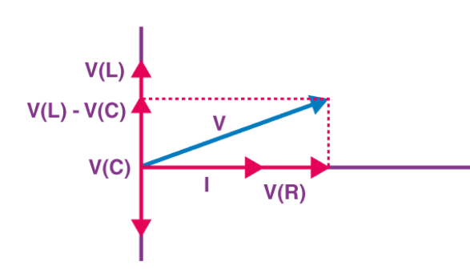
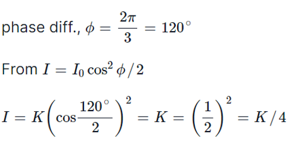
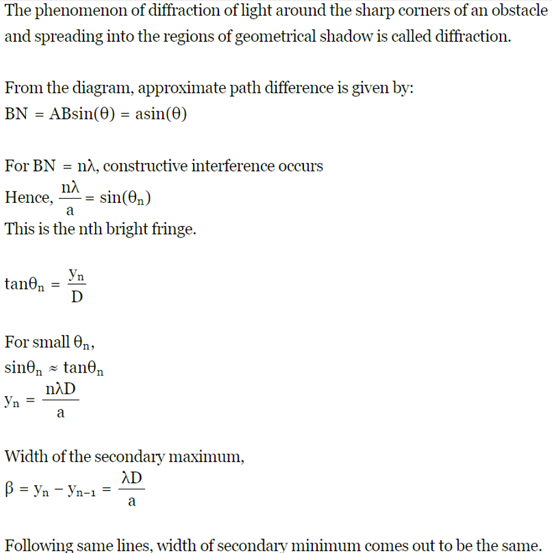
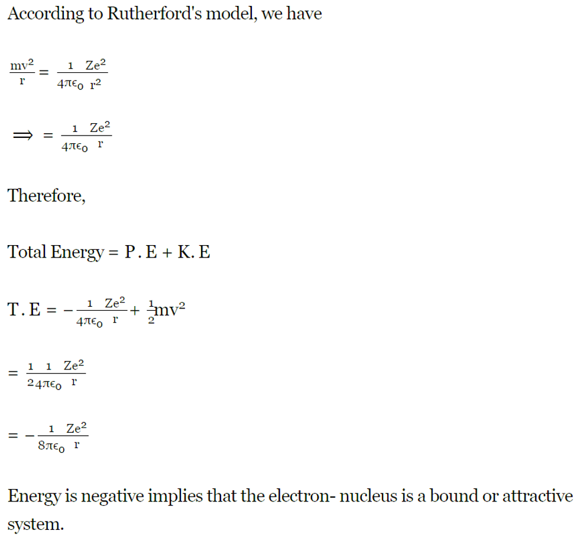

Here, you will find past 10 years papers with solutions, chapter-wise, year-wise, and mark-wise. We will also show the number of times each question has been repeated to help you prioritize your study topics accordingly. Use the table of contents below to navigate to your desired chapter.
Chapter 1: Electric Charges And Fields
Topic 1: Basic Properties of Electric Charge
1 Marks Questions
Q1- Does the charge given to a metallic sphere depend on whether it is hollow or solid? Give reason for your answer. (Delhi Scheme - 2017 Set-1)(Delhi Scheme - 2017 Set-2)(Delhi Scheme - 2017 Set-3)
Solution- The charge given to a metallic sphere does not depend on whether it is hollow or solid. This is because the charge resides on the surface of the conductor due to electrostatic repulsion, and it distributes itself uniformly over the surface regardless of the internal structure of the sphere.
Topic 2: Coulomb’s Law
1 Marks Questions
Q1- What is one ampere of current, using the concept of force between two infinitely long parallel current-carrying conductors?(Outside Delhi Scheme Set-1, 2014)
Solution- The unit of current that determines whether two parallel, uniform, long linear conductors placed one metre apart in free space will attract or repel one another with a force of 2107 N per metre of length is one ampere.
Topic 3: Forces between Multiple Charges
2 Marks Questions
Q1- Four point charges Q, q, Q and q are placed at the corners of a square of side ‘a’ as shown in the figure.
Find the
(a) resultant electric force on a charge Q, and
(b) potential energy of this system.(55-1 2018-Set-1)(55-1 2018-Set-2)(55-1 2018-Set-3)
Solution- Click here for detailed solution.
Topic 4: Electric Field
1 Marks Questions
Q1- To which part of the electromagnetic spectrum does a wave of frequency 5 × 10^19 Hz belong?(Outside Delhi Scheme Set-1, 2014)
Solution- A wave of frequency 5×1019 Hz lies in the gamma region of the electromagnetic spectrum.
2 Marks Questions
Q1- (a) Three point charges q, -4q, and 2q are placed at the vertices of an equilateral triangle ABC of side ‘l’ as shown in the figure. Obtain the expression for the magnitude of the resultant electric force acting on the charge q.
(b) Find out the amount of work done to separate the charges at infinite distance.(55-1 2018 Set-1)(55-2 2018 Set-2)(55-3 2018 Set-1)
Solution- (a)
(b)
Potential energy of the system U = Uq,2q+Uq,-4q+U2q,-4q
U=(kq(2q)/l)+(kq(-4q)/l)+(k2q(-4q)/l)=-10kq2/l
3 Marks Questions
Q1- A charge is distributed uniformly over a ring of radius ‘a’. Obtain an expression for the electric intensity E at a point on the axis of the ring. Hence show that for points at large distances from the ring, it behaves like a point charge. (Delhi Scheme-2016 Set-2)(Delhi Scheme-2016 Set-3)
Solution- Click here for detailed solution
Q2- (a) Twelve negative charges of same magnitude are equally spaced and fixed on the circumference of a circle of radius R as shown in Fig. (i). Relative to potential being zero at infinity, find the electric potential and electric field at the centre C of the circle.
(b) If the charges are unequally spaced and fixed on an arc of 120° of radius R as shown in Fig. (ii), find electric potential at the centre C.(55/1/1 2023)(55/1/2 2023)(55/1/3 2023)
Solution- (a) (1) The electric potential V at C is the algebraic sum of the electric potentials contributed by all the electrons. Because electric potential is a scalar, the orientations of the electrons do not matter. (2) The electric field at C is a vector quantity and thus the orientation of the electrons is important.
Calculations: Because the electrons all have the same negative charge −e and are all the same distance R from C,
V = -12(1/4πε0)(e/R)
(b)Because the distance between C and each electron is unchanged and orientation is irrelevant. The electric field is no longer zero, however, because the arrangement is no longer symmetric. A net field is now directed toward the charge distribution.
Topic 5: Electric Field Lines
1 Marks Questions
Q1- Why do the electrostatic field lines not form closed loops?(Outside Delhi Scheme Set-2, 2014)
Solution- The positive charge is where the electrostatic field lines begin, and they terminate at the negative charge. The electrostatic field lines do not form closed loops because there is an isolated positive and negative charge present. They can never start and finish at the same location.
Q2- Why do the electric field lines never cross each other ?(Outside Delhi Scheme 2014 Set-3)
Solution- Electric lines of force never intersect each other because at the point of intersection, two tangents can be drawn to the two lines of force. This means two direction of electric field at the point of intersection, which is not possible.
Q3- Draw the pattern of electric field lines, when a point charge – Q is kept near an uncharged conducting plate.(55-1-1 2019)(55-1-2 2019)(55-1-3 2019)
Solution-
5 Marks Questions
Q1- a) Use Gauss’ law to derive the expression for the electric field (E) due to a straight uniformly charged infinite line of charge density λ C/m.
(b) Draw a graph to show the variation of E with perpendicular distance r from the line of charge.
(c) Find the work done in bringing a charge q from perpendicular distance r1 to r2 (r2 > r1). (55-1 2018 Set-1)(55-2 2018 Set-2)(55-3 2018 Set-3)
Solution- Click here for detailed solution.
Q2- (a)Find the expression for the potential energy of a system of two point charges q1 and q2 located at r1 and r2, respectively in an external electric field E.
(b) Draw equipotential surfaces due to an isolated point charge (–q) and depict the electric field lines.
(c) Three point charges +1 μC, –1 μC, and +2 μC are initially infinite distance apart. Calculate the work done in assembling these charges at the vertices of an equilateral triangle of side 10 cm. (55/1/1 2020)(55/1/2 2020)(55/1/2 2020)
Solution-
Topic 6: Electric Flux
5 Marks Questions
Q1- (a) Explain, using suitable diagrams, the difference in the behavior of a (i) conductor and (ii) dielectric in the presence of an external electric field. Define the terms polarization of a dielectric and write its relation with susceptibility.
(b) A thin metallic spherical shell of radius R carries a charge Q on its surface. A point charge Q/2 is placed at its center C and another charge +2Q is placed outside the shell at a distance x from the center as shown in the figure. Find (i) the force on the charge at the center of the shell and at the point A, (ii) the electric flux through the shell.(Outside Delhi Scheme-2015 Set-1,2,3)
Solution- (a)
(i) When an electric field is present, the conductor's free charge carriers shift the charge distribution and cause it to self-adjust, resulting in a zero net electric field inside the conductor.
(ii) By stretching or reorienting the molecules in a dielectric, the external electric field creates a net dipole moment. The induced dipole moment causes the electric field to oppose the external electric field, albeit not completely cancel it out.
Polarisation: The polarisation is the induced dipole moment per unit volume. P = Xc E holds for linear isotropic dielectrics with susceptibility Xc.
Topic 7: Electric Dipole
3 Marks Questions
Q1- (i) Derive the expression for electric field at a point on the equatorial line of an electric dipole.
(ii) Depict the orientation of the dipole in (i) stable, (ii) unstable equilibrium in a uniform electric field.(Delhi Scheme-2017 Set-1)(Delhi Scheme-2017 Set-2)(Delhi Scheme-2017 Set-3)
Solution- Click here for detailed solution
Q2- The question "An electric dipole consisting of charges +q and –q separated by a distance L is in stable equilibrium in a uniform electric field →E. The electrostatic potential energy of the dipole is
(A) qLE
(B) zero
(C) -qLE
(D) -2qEL (55/1/1 2020)(55/1/2 2020)(55/1/3 2020)
Solution- (B) zero
Q3- A point charge situated at a distance 'r' from a short electric dipole on its axis, experiences a force F. If the distance of the charge is '2r', the force on charge will be:
(A) F/16
(B) F/8
(C) F/4
(D) F/2 (55/1/1 2023)(55/1/2 2023)(55/1/3 2023)
Solution- (B) F/8 Hint:F=k.|p.q|/r3
5 Marks Questions
Q1- (a) An electric dipole of dipole moment p↑ consists of point charges + q and -q separated by a distance 2a apart. Deduce the expression for the electric field due to the dipole at a distance x from the centre of the dipole on its axial line in terms of the dipole moment p↑.Hence show that in the limit
(b) Given the electric field in the region E↑= 2xi^, find the net electric flux through the cube and the charge enclosed by it.(Outside Delhi Scheme-2015 Set-1,2,3)
Solution- Click her for solution.
Q2- (a) Derive an expression for the electric field at any point on the equatorial line of an electric dipole.
(b) Two identical point charges, q each, are kept 2m apart in air. A third point charge Q of unknown magnitude and sign is placed on the line joining the charges such that the system remains in equilibrium. Find the position and nature of Q.(55-1-1 2019)(55-1-2 2019)(55-1-3 2019)
Solution-
Topic 8: Gauss’s Law And Its Applications
1 Marks Questions
Q1- What is the electric flux through a cube of side 1 cm which encloses an electric dipole ?(Outside Delhi Scheme-2015 Set-1,2,3)
Solution- It is possible to argue that the net flux through the cube is zero since, in accordance with Gauss Law, the net charge enclosed in the surfaces bound by the cube is zero (the dipole is made up of equal and opposite charges).
Q2- How does the electric flux due to a point charge enclosed by a spherical Gaussian surface get affected when its radius is increased ?(Delhi Scheme-2016 Set-2)(Delhi Scheme-2016 Set-3)
Solution- Electric Flux, ϕ=qenclosed/ϵ0 Due to the fact that the positive and negative charges in an electric dipole are equally spaced apart. A dipole has zero net charge as a result.Therefore, electric flux is also zero.
Q3- If the net electric flux through a closed surface is zero, then we can infer
(A) no net charge is enclosed by the surface.
(B) uniform electric field exists within the surface.
(C) electric potential varies from point to point inside the surface.
(D) charge is present inside the surface. (55/1/1 2020)(55/1/2 2020)(55/1/3 2020)
Solution- (A) no net charge is enclosed by the surface.
5 Marks Questions
Q1- (a) Define electric flux. Is it a scalar or a vector quantity ? A point charge q is at a distance of d/2 directly above the centre of a square of side d, as shown in the figure. Use Gauss’ law to obtain the expression for the electric flux through the square
(b) If the point charge is now moved to a distance ‘d’ from the centre of the square and the side of the square is doubled, explain how the electric flux will be affected.(55-1 2018 Set 1)(55-2 2018 Set 2)(55-3 2018 Set 3)
Solution- (a)
(b)
Electric flux stays the same if the charge is now moved to a distance of d from the square's centre and the square's side is doubled. This is because electric flux depends only on the amount of charge and not on the square's side OR position of the charge.
Q2- (a) Using Gauss law, derive expression for electric field due to a spherical shell of uniform charge distribution σ and radius R at a point lying at a distance x from the centre of shell, such that
(i) R>x>0,and
(ii) x > R.
(b) An electric field is uniform and acts along + x direction in the region of positive x. It is also uniform with the same magnitude but acts in – x direction in the region of negative x. The value of the field is E = 200 N/C for x > 0 and E = – 200 N/C for x < 0. A right circular cylinder of length 20 cm and radius 5 cm has its centre at the origin and its axis along the x-axis so that one flat face is at x = + 10 cm and the other is at x = – 10 cm.
Find :
(i) The net outward flux through the cylinder.
(ii) The net charge present inside the cylinder. (55/1/1 2020)(55/1/2 2020)(55/1/3 2020)
Solution- (a)
(i) R>x>0
Inside a spherical shell, the charge = 0,therfore the electric field E=0
(ii) x>R
(b)
(i) The net outward flux=2EA
Φ = 2EA = 2x100x3.14x(0.05)2
Φ = 3.14 Nm2/c
(ii) The net charge present inside the cylinder
= ε0 x Φ = 8.854 x 10-12 x3.14 = 2.78x10-11C
Chapter 2: Electrostatic Potential And Capacitance
Topic 1: Potential due to a Point Charge
1 Marks Questions
Q1- A point charge +Q is placed at point O as shown in the figure. Is the potential difference VA–VB positive, negative or zero?(Delhi Scheme-2016 Set-2)(Delhi Scheme-2016 Set-3)
Solution- We know that, V=Q/4πε0r V∝1/r The potential due to a point charge decreases with increase of distance. VA-VB>0->VA-VB Hence, the charge Q is positive.
3 Marks Questions
Q1- (a) Draw the equipotential surfaces corresponding to a uniform electric field in the z-direction.
(b) Derive an expression for the electric potential at any point along the axial line of an electric dipole.(55-1-1 2019)(55-1-2 2019)(55-1-3 2019)
Solution- (a)
(b)
Topic 2: Dielectrics and Polarisation
2 Marks Questions
Q1- The space between the plates of a parallel plate capacitor is completely filled in two ways. In the first case, it is filled with a slab of dielectric constant K. In the second case, it is filled with two slabs of equal thickness and dielectric constants K1 and K2 respectively as shown in the figure. The capacitance of the capacitor is same in the two cases. Obtain the relationship between K, K1 and K2.(55/1/1 2020)(55/1/2 2020)(55/1/3 2020)
Solution- The capacitance of the capacitor filled with a dielectric slab (K) is given by:
C=Kε0A/d
where, A is the area of the plate, K is the dielectric constant, d is the thickness of the plate.
When the capacitor is filled with two slabs of equal thickness, the capacitance is as follows:
C=(2ε0A/d)((K1K2)/(K1)+K2)
Area of the plates remain same and thickness of each slab is d/2.
It is given that the capacitance is equal. So, equate the above two formulas:
Kε0A/d = (2ε0A/d)((K1K2)/(K1)+K2)
K = 2K1K2/(K1+K2)
Topic 3: Capacitors and Capacitance
2 Marks Questions
Q1- A parallel plate capacitor of capacitance C is charged to a potential V. It is then connected to another uncharged capacitor having the same capacitance. Find out the ratio of the energy stored in the combined system to that stored initially in the single capacitor.(Outside Delhi Scheme-2014 Set-1)(Outside Delhi Scheme-2014 Set-3)
Solution- Energy stored in a capacitor =(1/2)QV=(1/2)CV2 (1/2)(q2/C)(any one) Capacitance of the (parallel) combination =C+C=2C Here, the total charge, Q, remains the same: Therefore, initial energy= (1/2)(q2/C) and final energy=(1/2)(q2/2C) Therefore, final energy/initial energy=1/2
Q2- Define capacitor reactance. Write its S.I. units. (Outside Delhi Scheme-2015 Set-1,2,3)
Solution- Capacitive reactance is the term used to describe the capacitor's resistance to alternating current. Ohms, or resistance, is the unit of measure for capacitive reactance. XC is the symbol for capacitive reactance. The formula for capacitive reactance is XC = (1/2)(ΠfC).
5 Marks Questions
Q1- (a) Describe briefly the process of transferring the charge between the two plates of a parallel plate capacitor when connected to a battery. Derive an expression for the energy stored in a capacitor.
(b) A parallel plate capacitor is charged by a battery to a potential difference V. It is disconnected from the battery and then connected to another uncharged capacitor of the same capacitance. Calculate the ratio of the energy stored in the combination to the initial energy in the single capacitor.(55-1-1 2019)(55-1-2 2019)(55-1-3 2019)
Solution- (a) Electrons are transferred from the capacitor's positive plate to its negative plate when a battery is connected to the parallel-plate capacitor's two plates.
As a result, the battery moves positive charge from the negative to the positive plate. The work involved in this movement is stored in the capacitor as electrostatic energy. Capacitor energy storage: Allow the capacitor's charge to always be q.
Hence, q /c, where c is the capacitance, is the potential of the capacitor. Assuming that the capacitor receives an additional charge dq, the effort involved in providing this additional charge is
dw=(q/c)xdq
Total work done in giving chargeQ to capacitor is
W= = = [q2/2c]q=Qq=0
W=Q2t/2C
which is the form of energy stored. Using Q=CV, we have
U=W=CV2/2
which is the expression for energy stored in a capacitor. (b)
Charge flows from a parallel-plate capacitor that has been charged by a battery to a potential difference V to an uncharged capacitor with the same capacitance. This process continues until the potentials of the two capacitors are equal. Common potential is the equal potential of the two capacitors. Initially:
Charge on capacior 1 is q1 = q
Potential difference V1 is V
Capacitance C1 is C
Charge on capacitor 2 is q2 = 0
Potential difference V2 is 0
Capacitance C2 is C
The energy stored in capacitor 1 is
U=C1V12/2=CV2/2
When two capacitors are combined:
Charge on combination q' is C1+C2=C+C=2C.
Potential difference is
V'=(C1V1)+(C2+V2)/C1+C2
V' = (CV+Cx0)/C+C = CV/2C
V' = V/2
Energy stored in combination is
U' = c'(V')2/2
U' = (1/2)x(2C)x(V/2)2 = (1/2)(CV2/2)
Then, U'/U = 1/2
The ratio of energy stored in the combination to initial energy on single capacitor is 1/2.
Topic 4: Effect of Dielectric on Capacitance
3 Marks Questions
Q1- Two parallel plate capacitors X and Y have the same area of plates and same separation between them. X has air between the plates while Y contains a dielectric medium of εr= 4.
(i) Calculate capacitance of each capacitor if equivalent capacitance of the combination is 4 µF.
(ii) Calculate the potential difference between the plates of X and Y.
(iii) Estimate the ratio of electrostatic energy stored in X and Y.(Delhi Scheme-2016 Set-2)(Delhi Scheme-2016 Set-3)
Solution- Source:sarthaks.com
Topic 5: Combination of Capacitors
3 Marks Questions
Q1- Two capacitors of unknown capacitances C1 and C2 are connected first in series and then in parallel across a battery of 100 V. If the energy stored in the two combinations is 0.045 J and 0.25 J respectively, determine the value of C1 and C2. Also calculate the charge on each capacitor in the parallel combination.(Outside Delhi Scheme-2015 Set-1,2,3)
Solution-
Q2- (i) Find the equivalent capacitance between A and B in the combination given below, where each capacitor is of 2 μF capacitance.
(ii) If a DC source of 7V is connected across AB, how much charge is drawn from the source and what is the energy stored in the network?(Delhi Scheme-2017 Set-1)(Delhi Scheme-2017 Set-2)(Delhi Scheme-2017 Set-3)
Solution-
(i) Capacitors C2,C3 and C4 are in parallel
C234=C2+C3+C4=2μF + 2μF + 2μF
∴C234=6μF
Capacitors C1,C234 and C5 are in series,
1/Ceq=(1/C1)+(1/C234)+(1/C5)=1/2+1/6+1/2=7/6μF
Therefore, Ceq=6/7μF.
(ii) Charge drawn from the source
Q=CeqV
(6/7)x7μC=6μC
Energy stored in the network,
U=Q22C
((6x6x10-10x7)/(2x6x10-6))J=21x10-6 J
= 21 μJ
Topic 6:Van de Graff Generator
5 Marks Questions
Q1- Draw a labelled diagram of Van de Graaff generator. State its working principle to show how by introducing a small charged sphere into a larger sphere, a large amount of charge can be transferred to the outer sphere. State the use of this machine and also point out its limitations.(Outside Delhi Scheme-2014 Set-1)(Outside Delhi Scheme-2014 Set-2)
Solution- The Van de Graff generator is an electrical apparatus that distributes and gathers electric charge on the exterior using a belt that is driven by a motor. A very high electric potential is produced by this. It is predicated on the idea that like negative charges repel one another and disperse to the sphere's exterior. The diagram below illustrates how the Van de Graff generator is put together.
The Van de Graff is a set of configurations that restricts the direction of charge flow. Furthermore, only charged particles can be accelerated by the Van de Graff. The instrument's limitations are these two things.
Let's now set the charges on the inner and outer radii to be q and q, respectively.
Potential on the inner sphere will thus be provided by,
V(r)=(1/4πε0)((Q/R)+(q/r))...............(1)
Similarly, the potential outer sphere,
V(R)=(1/4πε0)((Q/R)+(q/r))...............(2)
Now subtracting (2) from (1) V(r)-V(R)=(q/4πε0)((1/r)-(1/R))
The aforementioned demonstrates that the outer sphere's potential will never decrease. Once the two spheres are connected, charge will begin to move between them. More charge will be able to build up on the outer sphere as a result.
Utilising the Van de Graff, high voltage is produced. It is also employed in scientific experiments as an electrostatic accelerator.
Chapter 3: Current Electricity
Topic 1: Electric Current in Conductors
2 Marks Questions
Q1- Estimate the average drift speed of conduction electrons in a copper wire of cross-sectional area 2.5 x 10-7m2 carrying a current of 1.8 A. Assume the density of conduction electrons to be 9 x 1028m-3.(Outside Delhi Scheme-2014- Set-2)(Outside Delhi Scheme-2014- Set-3)
Solution- Given, n = 9 x 1028m3 e = 1.6 x 10-19 A = 2.5 x 10-7 I=neAvd vd=I/neA Substituting the values, vd=1.048x10-3m/s
3 Marks Questions
Q1- (a) Define the term ‘conductivity’ of a metallic wire. Write its SI unit.
(b) Using the concept of free electrons in a conductor, derive the expression for the conductivity of a wire in terms of number density and relaxation time. Hence obtain the relation between current density and the applied electric field E.(55-1 2018 Set-1)(55-2 2018 Set-2)(55-3 2018 Set-3)
Solution- (a) Conductivity - It is the ratio of current density (J) to electric field strength (E). SI Unit is Siemens/meter.
(b) Expression for the conductivity of a wire in terms of number density and relaxation time
As we know that
i=neAVd
V/R=neAVd
V=neAVdxR
El=neAVdx(ρl/A)
E=neVρ
E=neρ x (eEτ)/m
1=ne2τρ/m
1/ρ=ne2τ/m
σ=ne2τ/m...(1)
Relation between current density and the applied electric field E
From 1st equation of motion
v=u+at
∵Vd=at
Vd=eEτ/m
∵i=neAVd
i/A=J=current density
J=ne(Vd)
J=ne2τ(E)/m
J=σE
σ=ne2τ/m
Topic 2: Drift of Electrons and the Origin of Resistivity
1 Marks Questions
Q1- How does the mobility of electrons in a conductor change, if the potential difference applied across the conductor is doubled, keeping the length and temperature of the conductor constant?(55-1-1 2019)(55-1-2 2019)(55-1-3 2019)
Solution- If the potential difference applied across the conductor is doubled, mobility will become half.
Q2- A steady current flows through a metallic wire whose area of cross-section (A) increases continuously from one end of the wire to the other. The magnitude of drift velocity (vd) of the free electrons as a function of 'A' can be shown by:(55/1/1 2023)(55/1/2 2023)(55/1/3 2023)
Solution- (a)
5 Marks Questions
Q1- (i) Define the term drift velocity.
(ii) On the basis of electron drift, derive an expression for resistivity of a conductor in terms of number density of free electrons and relaxation time. On what factors does resistivity of a conductor depend ?
(iii) Why alloys like constantan and manganin are used for making standard resistors ?(Delhi Scheme-2016 Set-2)(Delhi Scheme-2016 Set-3)
Solution-
(i) - The average velocity with which the free electron drift under the influence of an electric field is called drift velocity.
(ii)-
A conductor's resistivity is determined by the following variables:
(1) It is inversely correlated with the number of free electrons in the conductor per unit volume (n).
(2) It has an inverse relationship with the average relaxation time (τ) of the conductor's free electrons.
(iii)- Because it is an alloy, its temperature coefficient of resistance is very low and its resistivity is very high.
Q2- (i) Derive the expression for drift velocity of electrons in a conductor, hence deduce Ohm's law.
(ii) A wire whose cross-sectional area is increasing linearly from its one end to the other, is connected across a battery of V volts. Which of the following quantities remain constant in the wire?
(a) drift speed
(b) current density
(c) electric current
(d) electric field.
Justify your answer.(Delhi Scheme-2017 Set-1)(Delhi Scheme-2017 Set-1)(Delhi Scheme-2017 Set-1)
Solution-
(ii) A wire connected across a V-volt battery has a cross-sectional area that increases linearly from one end to the other.
Given that the current is independent of the wire's cross-sectional area,
The rate of charge flow is known to be I = dq/dt, whereas the drift speed, current density, and electric field are dependent upon the growing cross-section area and are expressed by the following formula:
Speed of drift = vd = I/Ane
I/A is the current density.
Field electric - J/σ
In the wire, the drift speed, current density, and electric field all stay constant.
Topic 3: Temperature Dependance of Resistivity
1 Marks Questions
Q1- For a metallic conductor, the correct representation of variation of resistance R with temperature T is : (55/1/1 2023)(55/1/2 2023)(55/1/3 2023)
Solution- (b)
Topic 4: Electrical Energy, Power
1 Marks Questions
Q1- Graph showing the variation of current versus voltage for a material GaAs is shown in the figure. Identify the region of (i) negative resistance (ii) where Ohm’s law is obeyed.(Outside Delhi Scheme-2015 Set-1,2,3)
Solution- According to Ohm's Law, the current passing through a conductor is directly proportional to the voltage applied across it.Thus
V∝I ⟹V/I=R R is the resistance of the conductor.
Hence for Ohm's law to obeyed, the slope of I vs V curve is constant and positive. Hence region BC obeys Ohm's law. For R to be negative, slope of I vs V curve should be negative, which is there for region DE.
3 Marks Questions
Q1- A voltage V = Vosin(ωt) is applied to a series LCR circuit. Derive the expression for the average power dissipated over a cycle. Under what condition is (i) no power dissipated even though the current flows through the circuit, (ii) maximum power dissipated in the circuit?
Solution -
Topic 5: Combination of Resistors-Series and Parallel
2 Marks Questions
Q1- Two bulbs are rated (P1, V) and (P2, V). If they are connected (i) in series and (ii) in parallel across a supply V, find the power dissipated in the two combinations in terms of P1 and P2.(55-1-1 2019)(55-1-2 2019)(55-1-3 2019)
Solution- Electric power is given by
P=IV = I2R = V2/R (as V=IR) (i)When two bulbs are connected in series:
Effective resistance, R=R1+R2
(ii)When bulbs are connected in parallel:
Q2- Two resistors R1 and R2 of 4 Ω and 6 Ω are connected in parallel across a battery. The ratio of power dissipated in them, P1 : P2 will be
(A) 4 : 9
(B) 3 : 2
(C) 9 : 4
(D) 2 : 3 (55/1/1 2020)(55/1/2 2020)(55/1/3 2020)
Solution- (C)9:4
Topic 6: Cells, emf, Internal Resistance
1 Marks Questions
Q1- The potential difference across a cell in an open circuit is 8 V. It falls to 4 V when a current of 4 A is drawn from it. The internal resistance of the cell is :
(a) 4 Ω
(b) 3 Ω
(c) 2 Ω
(d) 1 Ω (55/1/1 2023)(55/1/2 2023)(55/1/3 2023)
Solution- (d) 1Ω Hint: emf=V+Ir
2 Marks Questions
Q1- A cell of emf ‘E’ and internal resistance ‘r’ is connected across a variable resistor ‘R’. Plot a graph showing variation of terminal voltage ‘V’ of the cell versus the current ‘I’. Using the plot, show how the emf of the cell and its internal resistance can be determined.(Outside Delhi Scheme-2014 Set-1)(Outside Delhi Scheme-2014 Set-3)
Solution- Given A cell of emf ‘E’ and internal resistance ‘r’ is connected across a variable resistor ‘R’. The relation between V and I is given by:V=E-Ir Therefore,the graph between I and V is as shown in the following figure
Q2- In a potentiometer arrangement for determining the emf of a cell, the balance point of the cell in open circuit is 350 cm. When a resistance of 9 Ω is used in the external circuit of the cell, the balance point shifts to 300 cm. Determine the internal resistance of the cell(55-1 2018-Set-1)(55-1 2018-Set-2)(55-1 2018-Set-3)
Solution- Given: length l1 = 350 cm is the initial null point.
The final null point is located at length l2 = 300 cm.
External resistance: 9Ω R
Let the internal resistance be denoted by r.
We know that in potentiometer
E/Vinternal voltage=l1/l2 and V=ER/(R+r)
From both the equations,
E/((ER)/(R+r))=l1/l2
(R+r)/R=l1/l2
r=((l1-l2)R)/l2=((350-300)9)/300=1.5Ω
3 Marks Questions
Q1- A cell of emf ‘E’ and internal resistance ‘r’ is connected across a variable load resistor R. Draw the plots of the terminal voltage V versus (i) R and (ii) the current I. It is found that when R = 4 Ω, the current is 1 A and when R is increased to 9 Ω, the current reduces to 0.5 A. Find the values of the emf E and internal resistance r.(Outside Delhi Scheme 2015 Set-1,2,3)
Solution-
From equation (i) and (ii) 4 + r = 4.5 + 0.5 r therefore, r = 1 ohm Using this value of r, we get E = 5V
Topic 7: Cells in Series and in Parallel
2 Marks Questions
Q1- Two cells of emfs 1.5 V and 2.0 V having internal resistances 0.2 Ω and 0.3 Ω respectively are connected in parallel. Calculate the emf and internal resistance of the equivalent cell. (Delhi Scheme-2016 Set-2)(Delhi Scheme-2016 Set-3)
Solution- Given,E1=1.5V,E2=2.0V,r1=0.2Ω, r3=0.3Ω Equivalent resistance of parallel combination, 1/req=(1/r1)+(1/r2)
Therefore,on solving,req=0.12Ω
Now,equivalent emf,Eeq=((E1/r1)+(E2/r2))req Therefore,on solving,equivalent emf,Eeq=1.7V
Q2- A 10 V cell of negligible internal resistance is connected in parallel across a battery of emf 200 V and internal resistance 38 Ω as shown in the figure. Find the value of current in the circuit.(55-1 2018-Set-1)(55-2 2018- Set-2)(22-3 2018- Set-3)
Solution- Net emf of the combination of cell E = 200−10=190 V
Net resistance of the circuit R= 38Ω
So, current in the circuit I=E/R
⟹I=190/38= 5A
Q3- (a) Two cells of emf E1 and E2 have their internal resistances r1 and r2, respectively. Deduce an expression for the equivalent emf and internal resistance of their parallel combination when connected across an external resistance R. Assume that the two cells are supporting each other.
(b) In case the two cells are identical, each of emf E = 5 V and internal resistance r = 2 Ω, calculate the voltage across the external resistance R = 10 Ω.(55/1/1 2020)(55/1/2 2020)(55/1/3 2020)
Solution-
Topic 8: Kirchhoff’s Rules
3 Marks Questions
Q1- Using Kirchhoff’s rules calculate the current through the 40 Ω and 20 Ω resistors in the following circuit:(55-1-1 2019)55-1-2 2019)55-1-3 2019)
Solution- First, label the circuit with currents in accordance with Kirchhoff's junction rule:
Substituting the value of I2 in (1),we get
I1= 4A
Hence, there is no current through the 40Ω resistor and 4A current flows through the 20Ω resistor.
5 Marks Questions
Q1- (i) State the two Kirchhoff's laws. Explain briefly how these rules are justified.
(ii) The current is drawn from a cell of emf E and internal resistance r connected to the network of resistors each of resistance r as shown in the figure. Obtain the expression for (i) the current draw from the cell and (ii) the power consumed in the network.(Delhi Scheme 2017-Set-1)(Delhi Scheme 2017-Set-2)(Delhi Scheme 2017-Set-3)
Solution- (i) The Laws of Kirchhoff:
First Law: At a junction, the algebraic sum of current is zero, or ∑I 0. This suggests that the total amount of current flowing into and out of a junction is equal.
Second Law: In a closed loop, the resistance times the corresponding current in each of the emfs is equal to the algebraic sum of the emfs, or ∑E=∑IR.
(ii) From the above figure, we can use the horizontal symmetry to deduce the current
As both resistance in the circuit, as well as the internal resistance in the circuit, have the same resistance Y
The resistance of the loop i will be
(1/Ri)=(1/r)+(1/2r)
1/Ri=3r/2r2
Ri=2r/3
Because the circuit | and || are same we can say that
R||=2r/3
Combined resistance will be
R=R|+R||
1/R=(1/R|)+(1/R||)
1/R=(1/(2r/3))+(1/(2r/3))
Therefore, R=r/3
Now this circuit is series with internal resistance 'r'
The current drawn from the cell will be
I=3E/4r
And power consumed by the network
P=I2R
P=(9E2/16r2)x4r/3
P=3E2/4r
Topic 9: Wheatstone Bridge
2 Marks Questions
Q1- Use Kirchhoff’s rules to obtain conditions for the balance condition in a Wheatstone bridge.(Outside Delhi Scheme-2015 Set-1,2,3)
Solution- Check out the solution here.
Topic 10: Metre Bridge
2 Marks Questions
Q1- Explain the principle of working of a meter bridge. Draw the circuit diagram for determination of an unknown resistance using it. (55/1/1 2020)(55/1/2 2020)(55/1/3 2020)
Solution- Meter bridge or slide wire bridge is the practical form of a wheat-stone bridge, which is used for measuring unknown resistances. Working principle of meter bridge is that the ratio of resistance of the two lengths of the wire across the position of jockey, where galvanometer shows no deflection, is equal to the ratio of known resistance, R and unknown resistance, S.
3 Marks Questions
Q1- Answer the following:
(a) Why are the connections between the resistors in a meter bridge made of thick copper strips?
(b) Why is it generally preferred to obtain the balance point in the middle of the meter bridge wire?
(c) Which material is used for the meter bridge wire and why?(Outside Delhi Scheme-2014 Set 1,3)
Solution- a) Copper wire has a very low resistivity. Thick wires are used to connect the resistors in order to boost the cross-sectional rate. As a result, wire resistance is very minimal.
b) In order to raise the metre bridge's sensitivity, a balance point is found in the centre of the wire.
c) Because of its nearly nonexistent temperature coefficient of resistance, which keeps the resistance of the wire constant as the temperature of the wire rises as a result of current flow, Constantan is used for metre bridge wire.
Total resistance is given by, Rtot=(Ro/2)+((Ro/2).R)/(R0/2)+R)=R(R0+4R)/2(R0+2R)
Total current through the device is given by, Itotal =V/Rtotal
Q2- What is end error in a metre bridge? How is it overcome? The resistances in the two arms of the metre bridge are R = 5 Ω and S respectively.
When the resistance S is shunted with an equal resistance, the new balance length found to be 1.5 l1, where l1 is the initial balancing length. Calculate the value of S.(55-1-1 2019)(55-1-2 2019)(55-1-3 2019)
Solution- End error: The shifting of zero of the scale at different points as well as the stray resistance due to non-uniformity of metal wire gives rise to end error in meter bridge.
End error can be removed by repeating the experiment by interchanging unknown and known resistance and finally taking the mean value of resistance obtained in each experiment.
Given: The resistance in two arms of meter bridge are R = 5 Ω and 5 Ω.
According to Wheatstone bridge principle, we have the condition at balancing point as
R/l1=S/(100-l1) ......(1)
After shunting the resistance S by equal resistance, new balance length is 1.5l1. Shunting means connecting resistance in parallel. Thus, after shunting the new resistance, we get
1/S'=(1/S)+(1/S) = 2/5
Therefore, S'=5/2
and l1=1.5l1.Using Wheatstone bridge principle, we get
R/l1=S'/(100-l'1)
R/1.5l1=S/2(100-1.5l1)
R/l1=1.5x5/2(100-1.5l1)
Using Eq. (1), we get
S/(100-l1)=1.5x5/2(100-1.5l1)
-> 2(100-1.5l1) = 1.5(100-l1)
-> 200-3.0l1 = 150-1.5l1 -> 1.5l1 = 50
That is,
l1=50/1.5=100/3
Substituing the value of l1 = 100/3 and R= 5 in Eq(1), we get
S=10 Ω
Topic 11: Potentiometer
3 Marks Questions
Q1- A resistance of R draws current from a potentiometer as shown in the figure. The potentiometer has a total resistance RoΩ. A voltage V is supplied to the potentiometer. Derive an expression for the voltage across R when the sliding contact is in the middle of the potentiometer.(Outside delhi Scheme-2014 Set-1,2,3)(Delhi Scheme 2017-Set 1)(Delhi Scheme 2017-Set 2)(Delhi Scheme 2017-Set 3)
Solution- Solution
Q2- A potentiometer can measure emf of a cell because
(A) the sensitivity of potentiometer is large.
(B) no current is drawn from the cell at balance.
(C) no current flows in the wire of potentiometer at balance.
(D) internal resistance of cell is neglected. (55/1/1 2020)(55/1/2 2020)(55/1/3 2020)
Solution- (C) no current flows in the wire of potentiometer at balance.
5 Marks Questions
Q1- (i) State the principle of working of a potentiometer.
(ii) In the following potentiometer circuit AB is a uniform wire of length 1m and resistance 10 Ω. Calculate the potential gradient along the wire and balance length AO(=l).(Delhi Scheme-2016 Set-2)(Delhi Scheme-2016 Set-3)
Solution-
(i)- Principle of potentiometer: The potential difference across any two points of current carrying wire, having uniform cross-sectional area and material, of the potentiometer is directly proportional to the length between the two points.
(ii)- According to the given question, E=2V,R=15Ω,RAB=10Ω Potential difference across thw wire=(2/25)x10=0.8V/m.
Therefore, potential gradient = 0.8/1=0.8V/m
Potential difference across AO = (1.5/1.5)x0.3=0.3V
Therefore, Length,AO=(0.3/0.8)x100=37.5cm which is the required balance length of the wire.
Chapter 4:Moving Charges and Magnetism
Topic 1: Magnetic Force
1 Mark Questions
Q1- State Ampere's circuital law.
Solution-Ampere's circuital law states that the line integral of the magnetic field B) around a closed path (loop) is equal to the permeability of free space (μ0) times the total current (I) passing through the surface enclosed by the path. Mathematically, it is represented as:
∮B.dl=u0.I
Q2- What does Ampere's circuital law describe?
Solution- Ampere's circuital law describes the relationship between the magnetic field generated by a current-carrying conductor and the total current passing through a closed loop surrounding the conductor. It quantifies the circulation of magnetic field lines around the loop in terms of the enclosed current.
Q3- What is the significance of Ampere's circuital law in electromagnetism?
Solution- Ampere's circuital law is fundamental in understanding and analyzing magnetic fields produced by steady currents. It provides a mathematical tool to calculate the magnetic field strength around current-carrying conductors and is widely used in electromagnetism and engineering applications.
3 Mark Questions
Q1-
Explain Ampère's circuital law and its significance in electromagnetism. Discuss the mathematical expression of the law and provide examples illustrating its application in practical scenarios.
Solution-
Ampère's Circuital Law:
Ampère's circuital law is a fundamental principle in electromagnetism that relates the magnetic field around a closed loop to the electric current passing through the loop. It states that the line integral of the magnetic field (B) around any closed path (C) is equal to the permeability of free space (μ0) multiplied by the total current (I) passing through the surface enclosed by the path. Mathematically, it is expressed as:
∮B⋅dl=μ0⋅I
Where:
-∮C denotes the line integral around the closed path
-B is the magnetic field.
-dl is the differential element along the path.
-μ0 is the permeability of free space
-I is the total enclosed current passing through the surface enclosed by the path.
Significance and Applications:
1.Prediction of Magnetic Fields: Ampère's circuital law provides a method to calculate the magnetic field around a closed loop based on the current passing through the loop. This law is used to predict and analyze magnetic fields generated by various current-carrying conductors and configurations, including straight wires, solenoids, and toroids.
2.Design of Electromagnetic Devices: The law is crucial for designing and optimizing electromagnetic devices such as electromagnets, transformers, and magnetic sensors. Engineers utilize Ampère's circuital law to determine the required current or coil configuration to achieve the desired magnetic field strength and distribution in these devices.
3.Validation of Magnetic Field Calculations: Ampère's circuital law serves as a validation tool for experimental measurements and numerical simulations of magnetic fields. By comparing the calculated magnetic field using the law with experimental data or simulation results, scientists and engineers can verify the accuracy of their models and predictions.
Examples of Application:
Magnetic Field Inside a Solenoid: Ampère's circuital law can be applied to determine the magnetic field inside a long solenoid carrying a current I. By considering a closed loop path encircling the solenoid, the law can be used to derive the expression for the magnetic field intensity inside the solenoid, which is found to be proportional to the current and the number of turns per unit length of the solenoid.
Magnetic Field Around a Straight Current-Carrying Conductor: For a long straight conductor carrying a current I, Ampère's circuital law can be used to calculate the magnetic field intensity at a distance r from the conductor. By choosing a circular path centered on the conductor, the law yields the expression for the magnetic field strength, which decreases with increasing distance from the conductor and is inversely proportional to the distance.
In conclusion, Ampère's circuital law is a fundamental principle in electromagnetism with wide-ranging applications in predicting, designing, and validating magnetic fields in various systems and devices.
Chapter 5:Magnetism and Matter
Topic 1: Bar Magnet
1 Mark Questions
Q1- Define magnetic dipole moment of a bar magnet.
Solution- The magnetic dipole moment of a bar magnet is the product of its magnetic pole strength (m) and the distance (2l) between its poles. Mathematically, it is given as M = m * 2l.
Q2- What happens to the strength of the magnetic field around a bar magnet when it is broken into two pieces?
Solution- When a bar magnet is broken into two pieces, each piece behaves like an individual magnet with its own magnetic poles. Therefore, the strength of the magnetic field around each piece remains the same.
2 Marks Questions
Q1- Explain the concept of magnetic poles in a bar magnet.
Solution- In a bar magnet, the magnetic poles are regions where the magnetic field lines emerge (north pole) or converge (south pole). These poles exhibit properties such as attracting opposite poles and repelling similar poles, similar to electric charges.
Q2- Describe how the strength of the magnetic field varies around a bar magnet.
Solution- The strength of the magnetic field around a bar magnet is maximum near the poles and decreases as you move away from them. It follows an inverse square law, meaning the strength decreases with the square of the distance from the pole.
3 Marks Questions
Q1- Explain the concept of magnetic dipole moment associated with a bar magnet.
Solution- The magnetic dipole moment of a bar magnet is a measure of its strength and orientation. It is defined as the product of the pole strength and the distance between the poles. Mathematically,
m
=
magnetic pole strength
×
distance between poles
m=magnetic pole strength×distance between poles. This moment indicates the tendency of the magnet to align itself with an external magnetic field.
Q2- Describe the pattern of magnetic field lines around a bar magnet.
Solution- The magnetic field lines around a bar magnet emerge from the north pole and enter the south pole. These lines form closed loops outside the magnet. The field lines are stronger near the poles and become weaker as they move away. They never intersect each other, indicating the unique direction of the magnetic field at any point.
Q3- How does the strength of the magnetic field vary with distance from a bar magnet?
Solution- The strength of the magnetic field around a bar magnet decreases with increasing distance from the magnet. It follows an inverse square law, meaning the strength diminishes as the square of the distance from the magnet increases. Thus, the field is strongest near the poles and becomes weaker as you move away from them.
5 Marks Questions
Q1- Explain the concept of magnetic poles and magnetic field lines associated with a bar magnet. Describe the behavior of a magnetic needle when suspended freely in a uniform magnetic field.
Solution-
Magnetic poles are the regions of a magnet where the magnetic force is the strongest. A bar magnet has two poles - north and south.
Magnetic field lines emerge from the north pole and enter the south pole, forming closed loops outside the magnet.
When a magnetic needle is suspended freely in a uniform magnetic field, it aligns itself along the direction of the magnetic field. The north pole of the magnetic needle points towards the south pole of the magnetic field and vice versa.
Q2- Discuss the properties and behavior of a magnetic needle when placed at various positions around a bar magnet.
Solution-
When placed at the poles of the bar magnet, the magnetic needle experiences maximum deflection and aligns itself parallel to the magnetic field lines.
At the midpoint between the poles, the magnetic needle aligns itself perpendicular to the magnetic field lines, resulting in minimum deflection.
As the distance from the magnet increases, the deflection of the magnetic needle decreases, indicating the weakening of the magnetic field.
Question: Explain the concept of magnetic induction and the factors affecting it in a bar magnet.
Solution-
Magnetic induction is the process by which a material becomes magnetized when exposed to an external magnetic field.
Factors affecting magnetic induction include the material's permeability, the strength of the external magnetic field, and the temperature of the material.
In a bar magnet, the magnetic induction depends on the material's magnetic properties, such as its susceptibility and coercivity, along with the strength of the magnet's magnetic field.
Topic 2: Magnetism and Gauss’s Law
1 Mark Questions
Q1- State Gauss's law for magnetism.
Solution- Gauss's law for magnetism states that the magnetic flux through any closed surface is always zero.
Q2- What is the magnetic flux through a closed surface enclosing only one pole of a bar magnet?
Soultion- The magnetic flux through a closed surface enclosing only one pole of a bar magnet is zero, according to Gauss's law for magnetism.
2 Marks Questions
Q1- State Gauss's law for magnetism.
Solution- Gauss's law for magnetism states that the total magnetic flux through any closed surface is zero. Mathematically, it is represented as ∮B ⋅ dA = 0, where B is the magnetic field and dA is the vector differential area element.
Q2- Explain the significance of magnetic monopoles in relation to Gauss's law for magnetism.
Solution- The existence of magnetic monopoles would violate Gauss's law for magnetism, as it states that the total magnetic flux through any closed surface is zero. If magnetic monopoles existed, there would be magnetic flux either entering or leaving the closed surface, violating this law.
3 Marks Questions
Q1- Explain Gauss's law for magnetism.
Solution- Gauss's law for magnetism states that the net magnetic flux through any closed surface is always zero. This law implies that there are no magnetic monopoles (isolated magnetic poles) in nature. Unlike electric charges, which can exist independently, magnetic poles always come in pairs – north and south poles.
Q2- Describe the factors affecting the magnitude of the magnetic flux through a closed surface.
Solution- The magnitude of the magnetic flux through a closed surface depends on several factors. Firstly, it depends on the strength of the magnetic field penetrating the surface. Secondly, it depends on the orientation of the surface with respect to the magnetic field lines. Finally, the area of the surface also affects the flux – larger areas intercept more field lines, increasing the flux.
Q3- Can the net magnetic flux through a closed surface be nonzero? Justify your answer.
Solution- No, according to Gauss's law for magnetism, the net magnetic flux through any closed surface is always zero. This is because magnetic field lines form closed loops and do not have starting or ending points (monopoles). Thus, any field line entering a closed surface must also exit it, resulting in a net flux of zero.
5 Marks Questions
Q1-State Gauss's law for magnetism and explain its significance. Describe how it can be used to determine the magnetic field inside and outside a long solenoid.
Solution-
Gauss's law for magnetism states that the total magnetic flux through any closed surface is zero.
This law is significant as it helps in understanding the behavior of magnetic fields and their sources, such as currents and magnets.
Inside a long solenoid, the magnetic field is uniform and parallel to the axis of the solenoid. Gauss's law can be applied to a cylindrical surface to find the magnetic field strength.
Outside the solenoid, the magnetic field is negligible, and Gauss's law helps in understanding the absence of magnetic flux outside the solenoid.
Q2- Discuss the application of Gauss's law in determining the magnetic field due to a current-carrying wire.
Solution-
Gauss's law can be applied to determine the magnetic field around a straight current-carrying wire.
By considering a closed loop around the wire, Gauss's law states that the total magnetic flux through the loop is directly proportional to the current passing through the wire.
This law helps in calculating the magnitude and direction of the magnetic field produced by the current-carrying wire at various distances from the wire.
Q2- Explain the difference between Gauss's law for electricity and Gauss's law for magnetism.
Solution-
Gauss's law for electricity states that the total electric flux through any closed surface is equal to the charge enclosed by the surface divided by the permittivity of free space.
Gauss's law for magnetism states that the total magnetic flux through any closed surface is zero, indicating the absence of magnetic monopoles.
While Gauss's law for electricity relates electric flux to electric charges, Gauss's law for magnetism indicates the absence of isolated magnetic poles and the source of magnetic fields being currents and magnetic dipoles.
Topic 3: The Earth's Magnetism
1 Mark Questions
Q1- What is the angle of dip at the magnetic equator?
Solution- At the magnetic equator, the angle of dip is 0°.
Q2- Where on the Earth's surface does the magnetic declination have a value of zero?
Solution The magnetic declination has a value of zero at the agonic line, where the magnetic north and true north coincide.
2 Marks Questions
Q1- Discuss the variation of the magnetic declination across different locations on Earth.
Solution- Magnetic declination is the angle between magnetic north and true north at a particular location. It varies from place to place due to the non-uniform distribution of magnetic materials in the Earth's crust, as well as the movement of the magnetic poles.
Q2- Explain the phenomenon of magnetic storms and their impact on Earth.
Solution- Magnetic storms are disturbances in Earth's magnetic field caused by solar winds and solar flares. They can disrupt communication systems, navigation equipment, and power grids. Additionally, they can cause auroras to be visible at lower latitudes than usual.
3 Marks Questions
Q1- Explain how the angle of dip varies with latitude on the Earth's surface.
Solution- The angle of dip, also known as the inclination angle, is the angle between the direction of the Earth's magnetic field lines and the horizontal plane. At the magnetic poles, the angle of dip is 90°, while at the magnetic equator, it is 0°. As one moves from the equator towards the poles, the angle of dip increases gradually, reaching its maximum at the poles.
Q2- Discuss the significance of magnetic declination in navigation.
Solution- Magnetic declination is the angle between the geographic north and the magnetic north at a particular location. It is crucial for navigation because magnetic compasses align themselves with the Earth's magnetic field, which may not align perfectly with true north. Therefore, knowing the magnetic declination allows navigators to correct for the difference between magnetic and true north, ensuring accurate navigation.
Q3- How does the strength of the Earth's magnetic field vary with location on the Earth's surface?
Solution- The strength of the Earth's magnetic field varies with location on the Earth's surface. It is strongest at the magnetic poles and weakest at the magnetic equator. This variation occurs due to the inclination of the magnetic field lines, with steeper inclinations near the poles resulting in stronger magnetic fields.
5 Marks Questions
Q1- Discuss the magnetic properties of the Earth and explain the concept of magnetic declination and inclination.
Solution-
The Earth behaves as a giant magnet with its magnetic field aligned approximately along its axis of rotation.
Magnetic declination refers to the angle between true north and magnetic north at a specific location.
Magnetic inclination refers to the angle between the magnetic field lines and the horizontal plane at a given location.
These properties of Earth's magnetism are essential for navigation and understanding the behavior of compass needles.
Q2- Describe the variations in the Earth's magnetic field and their causes.
Solution-
The Earth's magnetic field is not uniform and exhibits variations both spatially and temporally.
Spatial variations occur due to the uneven distribution of magnetic materials within the Earth's core and crust.
Temporal variations result from changes in the Earth's magnetic field over time, such as magnetic reversals and secular variations.
These variations are studied using techniques like geomagnetic surveys and paleomagnetism to understand the dynamics of Earth's magnetic field.
Q3-Explain the significance of the Earth's magnetic field for navigation and communication systems.
Solution-
The Earth's magnetic field plays a crucial role in navigation, as it allows compasses to align along the magnetic field lines, aiding in determining direction.
Navigation systems, such as GPS, utilize Earth's magnetic field to provide accurate positioning information.
Communication systems rely on the Earth's magnetic field for geomagnetic field mapping and satellite communication, ensuring reliable transmission and reception of signals.
Topic 4:Magnetisation and Magnetic Intensity
1 Marks Questions
Q1- Define magnetic intensity (H).
Solution- Magnetic intensity (H) at a point is defined as the magnetic field strength or the magnetic field intensity at that point due to the magnetizing field.
Q2- What is the relationship between magnetization (M) and magnetic intensity (H) in a magnetic material?
Solution- Magnetization (M) of a magnetic material is directly proportional to the magnetic intensity (H) applied to it. Mathematically, M = χ_m * H, where χ_m is the magnetic susceptibility of the material.
2 Marks Questions
Q1- Define magnetic intensity and its relationship with magnetization.
Solution- Magnetic intensity (H) is the magnetic field strength in a material. It is related to magnetization (M) through the formula H = B/μ - M, where B is the magnetic flux density and μ is the permeability of the material.
Q2- Explain how the magnetization of a paramagnetic material varies with an increasing applied magnetic field.
Solution- In a paramagnetic material, magnetization increases linearly with an increasing applied magnetic field. This is because paramagnetic materials have unpaired electrons, which align with the applied field, leading to magnetization.
3 Marks Question
Q1- Explain the term 'hysteresis' in the context of magnetisation.
Solution- Hysteresis refers to the phenomenon where the magnetisation of a material lags behind the applied magnetic field when the field is changed. In other words, even after the removal of the external magnetic field, the material retains some degree of magnetisation. This lag arises due to the alignment and realignment of magnetic domains within the material, which require energy to change their orientation.
Q2- Discuss the effect of temperature on the magnetisation of a ferromagnetic material.
Solution- Temperature affects the magnetisation of ferromagnetic materials, particularly near their Curie temperature. Below the Curie temperature, ferromagnetic materials exhibit spontaneous magnetisation, while above it, they lose their ferromagnetic properties. This transition occurs because thermal energy disrupts the alignment of magnetic domains within the material, reducing its overall magnetisation.
5 Marks Questions
Q1- Define magnetization and magnetic intensity. Explain the relationship between them in terms of magnetic materials.
Solution-
Magnetization refers to the magnetic moment per unit volume of a material when subjected to an external magnetic field.
Magnetic intensity represents the magnetic field strength within a material due to external magnetic sources.
The relationship between magnetization (M) and magnetic intensity (H) is given by M = χH, where χ is the magnetic susceptibility of the material.
This relationship describes how magnetization is induced in a material when exposed to an external magnetic field, depending on the material's susceptibility.
Q2- Discuss the factors affecting magnetization and magnetic intensity in ferromagnetic materials.
Solution-
In ferromagnetic materials, magnetization is significantly influenced by factors like temperature, applied magnetic field strength, and magnetic domain structure.
At low temperatures, ferromagnetic materials exhibit spontaneous magnetization, forming magnetic domains aligned in a preferred direction.
Increasing the external magnetic field strength aligns more magnetic domains, leading to increased magnetization and magnetic intensity.
Temperature affects magnetization by altering the thermal motion of atoms and disrupting the alignment of magnetic domains, thereby affecting the material's overall magnetic properties.
Q3- Explain the difference between magnetic intensity and magnetic field strength. How are they related in a magnetic material?
Solution-
Magnetic intensity refers to the magnetic field strength within a material due to external magnetic sources, measured in amperes per meter (A/m).
Magnetic field strength represents the magnetic flux density in a given region of space.
Topic 5:Magnetic Properties of Materials
1 Marks Questions
Q1- Define the term 'hysteresis' in the context of magnetic materials.
Solution- Hysteresis is the phenomenon where the magnetic properties of a material exhibit a lagging effect with respect to the applied magnetic field, especially during magnetization and demagnetization processes.
Q2- What type of magnetic materials exhibit strong attraction to magnets?
Solution- Ferromagnetic materials exhibit strong attraction to magnets due to their high permeability and strong magnetic properties.
2 Marks Questions
Q1- Differentiate between diamagnetic and ferromagnetic materials.
Solution- Diamagnetic materials have no permanent magnetic dipole moment and weakly repel external magnetic fields, while ferromagnetic materials have strong permanent magnetic dipole moments and are attracted to external magnetic fields.
Q2-Explain how the domain theory accounts for the ferromagnetic properties of materials.
Solution- According to the domain theory, ferromagnetic materials are composed of small regions called domains, each with aligned magnetic moments. When an external magnetic field is applied, these domains align in the direction of the field, resulting in a net magnetic moment for the material.
3 Marks Questions
Q1- Differentiate between diamagnetic and paramagnetic materials. Provide examples of each.
Solution- Diamagnetic materials have a weak, negative susceptibility and are repelled by magnetic fields. Examples include bismuth and copper. Paramagnetic materials, on the other hand, have a positive susceptibility and are weakly attracted to magnetic fields. Examples include aluminum and calcium.
Q2- Describe the behavior of ferromagnetic materials in external magnetic fields.
Solution- Ferromagnetic materials exhibit strong attraction to external magnetic fields due to the alignment of magnetic domains within the material. When exposed to a magnetic field, these domains align in the direction of the field, resulting in a strong induced magnetisation. Additionally, ferromagnetic materials retain some degree of magnetisation .
Topic 6:Permanent Magnets and Electromagnets
1 Marks Questions
Q1- State the property of a permanent magnet that allows it to retain its magnetism for a long time.
Solution- Coercivity is the property of a permanent magnet that allows it to retain its magnetism for a long time.
Q2- Describe one application of an electromagnet.
Solution- Electromagnets are used in various applications such as magnetic resonance imaging (MRI) machines, electric motors, speakers, and magnetic separators.
2 Marks Questions
Q1- Describe the construction and working principle of a permanent magnet.
Solution- A permanent magnet is typically made of a ferromagnetic material and retains its magnetization even in the absence of an external magnetic field. It works based on the alignment of magnetic domains within the material, resulting in a net magnetic moment.
Q2-Discuss one application of an electromagnet.
Solution- One application of an electromagnet is in electric motors. In electric motors, electromagnets are used to generate a magnetic field, which interacts with a current-carrying conductor to produce motion. This motion is then used to drive various mechanical systems.
Chapter 6:Electromagnetic Induction
Topic 1:Motional emf
1 Mark Questions
Q1 Define motional emf.
Solution- Motional emf is the electromotive force induced in a conductor moving through a magnetic field or experiencing a change in magnetic flux.
Q2- State the condition under which motional emf is maximum.
Solution- Motional emf is maximum when the conductor moves perpendicular to the magnetic field lines.
2 Mark Questions
Q1- Explain the factors affecting the magnitude of motional emf induced in a conductor moving through a magnetic field.
Solution- The magnitude of motional emf induced in a conductor moving through a magnetic field depends on the speed of the conductor, the length of the conductor within the magnetic field, and the strength of the magnetic field.
3 Marks Questions
Q1- Describe an experiment to demonstrate the generation of motional emf using a conducting rod moving through a magnetic field.
Solution-
Take a conducting rod and place it between the poles of a horseshoe magnet. Connect the rod to a galvanometer to measure the induced current. Move the rod perpendicular to the magnetic field lines, and observe the deflection of the galvanometer needle, indicating the presence of motional emf.
Q2- Discuss the significance of Lenz's law in the context of motional emf.
Solution-
Lenz's law states that the direction of the induced current in a conductor is such that it opposes the change in magnetic flux that produced it. In the context of motional emf, Lenz's law ensures that the induced current creates a magnetic field opposing the motion of the conductor, thereby obeying the law of conservation of energy.
5 Mark Questions
Q1- Discuss the applications of motional emf in electrical generators and transformers.
Solution-
In electrical generators, motional emf is utilized to convert mechanical energy into electrical energy. When a coil rotates in a magnetic field, motional emf is induced, generating electric power. In transformers, motional emf is responsible for inducing secondary emf when the magnetic flux linking the primary coil changes, facilitating voltage transformation. These applications highlight the significance of motional emf in generating and transforming electrical energy.
Topic 2:self inductance
1 Mark Questions
Q1- Define self-inductance.
Solution- Self-inductance is the property of a conductor or a circuit that opposes any change in the current flowing through it by inducing an electromotive force (emf) in itself.
Q2-What is the unit of self-inductance?
Solution- The unit of self-inductance is the Henry (H).
2 Mark Questions
Q1- Explain why a coil with a ferromagnetic core has higher self-inductance compared to the same coil with an air core.
Solution- A coil with a ferromagnetic core has higher self-inductance because the permeability of the ferromagnetic material is much higher than that of air. This higher permeability increases the magnetic flux linked with the coil for the same amount of current, thus increasing the self-inductance.
Q2- State and explain Lenz's law in the context of self-inductance.
Solution- Lenz's law states that the direction of the induced electromotive force (emf) in a circuit is always such that it opposes the change in current that produced it. In the context of self-inductance, when the current through a coil changes, the induced emf opposes this change, trying to maintain the current's original direction.
3 Mark Questions
Q1- Derive the expression for the self-inductance of a solenoid.
Solution-
The self-inductance (L) of a solenoid with length (l), cross-sectional area (A), and number of turns per unit length (n) is given by:
L=u0.n^2.A.l
where u0 is the permeability of free space.
Q2-Discuss the factors affecting the self-inductance of a coil.
Solution-
The self-inductance of a coil depends on factors like the number of turns, the cross-sectional area, the length of the coil, and the permeability of the core material. Increasing the number of turns and the core's permeability increases the self-inductance, while increasing the length of the coil decreases it.
5 Marks Questions
Q1- Explain the phenomenon of electromagnetic induction and how it relates to self-inductance. Provide real-world examples.
Solution-
Electromagnetic induction is the process of generating an electromotive force (emf) in a circuit due to changes in magnetic flux. Self-inductance is a specific case of electromagnetic induction where the changing magnetic flux is produced by the current flowing through the same circuit. Real-world examples include the operation of electromagnets, transformers, and inductive sensors, where self-inductance plays a significant role in their function.
Q2- Discuss the significance of self-inductance in electrical circuits and its applications in engineering.
Solution-
Self-inductance is crucial in electrical circuits as it affects their behavior when the current changes. It causes delays in establishing steady currents or voltages, leading to effects like voltage spikes or frequency-dependent impedance. In engineering, self-inductance finds applications in various devices like transformers, inductive sensors, choke coils, and electric motors, where controlling or manipulating currents is essential for their operation.
Topic 3: Laws of Electromagnetic Induction
1 Mark Questions
Q1- State Faraday's law of electromagnetic induction.
Solution- Faraday's law of electromagnetic induction states that the magnitude of the induced electromotive force (emf) in a circuit is directly proportional to the rate of change of magnetic flux linked with the circuit.
Q2-What is the direction of the induced current in a conductor when it experiences a decrease in magnetic flux?
Solution-The induced current in a conductor flows in such a direction as to oppose the change causing it. So, when there's a decrease in magnetic flux, the induced current flows in a direction to oppose the decrease.
2 Mark Questions
Q1- Describe Lenz's law and its significance in electromagnetic induction.
Solution- Lenz's law states that the direction of the induced electromotive force (emf) and hence the induced current is always such that it opposes the change causing it. This law is crucial as it ensures the conservation of energy and acts as a basis for understanding the direction of induced currents in electromagnetic phenomena.
Q2- How does the induced emf change when the rate of change of magnetic flux increases in a coil?
Solution- According to Faraday's law, the induced emf in a coil is directly proportional to the rate of change of magnetic flux. Therefore, if the rate of change of magnetic flux increases, the induced emf in the coil also increases.
Topic 4: self inductance of a long solenoid
3 Mark Questions
Q1-
Explain the concept of self-inductance of a long solenoid. Derive the expression for the self-inductance of a long solenoid and discuss its significance in electrical circuits.
Solution-
Self-inductance is the property of a conductor or a circuit that opposes any change in the current flowing through it by inducing an electromotive force (emf) in itself. When a varying current flows through a long solenoid, it induces a magnetic field within the solenoid, which in turn induces an emf in the solenoid itself, opposing the change in current.
The expression for the self-inductance (L) of a long solenoid with length (l), cross-sectional area (A), and number of turns per unit length (n) is given by:
L=u0.n^2.A.l where u0 is the permeability of free space.
The significance of self-inductance in electrical circuits, particularly in long solenoids, lies in its ability to store energy in the form of a magnetic field. This stored energy can be released back into the circuit when the current changes, providing a temporary source of electrical energy. Self-inductance also affects the behavior of electrical signals in circuits, causing delays in establishing steady currents or voltages when the current changes. Additionally, it plays a crucial role in the design and operation of various electrical devices such as transformers, electromagnets, and inductors, where controlling or manipulating currents is necessary for various functions.
5 Mark Question
Q1-
Explain the concept of self-inductance in a long solenoid. Derive the expression for the self-inductance of a long solenoid and discuss its significance in electromagnetic phenomena. Provide relevant equations, and practical applications to illustrate your answer.
Solution-
Concept of Self-Inductance in a Long Solenoid:
Self-inductance is a property of a circuit or a conductor that opposes any change in the current flowing through it by inducing an electromotive force (emf) in itself. In a long solenoid, which consists of many closely spaced turns of wire wound in a helical shape, self-inductance arises due to the magnetic field produced by the current flowing through the solenoid.
Expression for Self-Inductance of a Long Solenoid:
The self-inductance (L) of a long solenoid with length (l), cross-sectional area (A), and number of turns per unit length (n) is given by the formula:
L=u0.n^2.A.l where
-u0 is the permeability of free space (
-n is the number of turns per unit length.
-A is the cross-sectional area of the solenoid.
-l is the length of the solenoid.
Significance of Self-Inductance in Electromagnetic Phenomena:
Opposition to Change in Current: Self-inductance opposes any change in the current flowing through the solenoid. When the current in the solenoid changes, it induces an emf in the solenoid, creating a back electromotive force that counteracts the change in current.
Energy Storage: Self-inductance allows energy to be stored in the magnetic field of the solenoid. When the current through the solenoid increases, energy is stored in the magnetic field, which can be released when the current decreases.
Inductive Reactance: In AC circuits, self-inductance causes inductive reactance, which is the opposition to the change in current flow due to the changing magnetic field. This property influences the behavior of AC circuits, affecting their impedance and phase relationships.
Applications: Self-inductance in long solenoids is utilized in various applications such as inductors for filtering signals in electronic circuits, transformers for voltage regulation, electromagnets for lifting heavy objects, and solenoid valves for controlling fluid flow in pneumatic and hydraulic systems.
Conclusion:
Self-inductance in a long solenoid is a fundamental concept in electromagnetism, influencing the behavior of circuits and magnetic devices. Its understanding is crucial in designing and analyzing electromagnetic systems and devices, making it a cornerstone of modern electrical engineering.
Topic 5: Induced emf by changing the area of coil
1 Mark Questions
Q1-State the factor that determines the magnitude of induced electromotive force (emf) in a coil when changing the area enclosed by the coil.
Solution-The rate of change of the magnetic flux through the coil determines the magnitude of induced electromotive force (emf) when changing the area enclosed by the coil.
3 Mark Questions
Q1- Describe the phenomenon of induced electromotive force (emf) by changing the area of a coil. Explain how the induced emf is related to the rate of change of area and the magnetic flux through the coil.
Solution-When the area of a coil changes, the magnetic flux through the coil also changes according to Faraday's law of electromagnetic induction. This change in magnetic flux induces an emf in the coil, which opposes the change causing it. The induced emf (
E) is directly proportional to the rate of change of area (dA/dt) according to the equation E=−dΦ/dt =−d(BA)/dt, where B is the magnetic field strength. Therefore, a faster change in area results in a greater induced emf.
Chapter 7:Alternating Current
Topic 1: AC Voltage Applied to a Series LCR Circuit
1 Mark Questions
Q1- Why is the use of a.c. voltage preferred over d.c. voltage? Give two reasons. (55-2 Outside Delhi Set-2, 2014) (55-3 Outside Delhi Set-3, 2014)
Solution- AC is preferred over DC because of the following reasons:
Loss of power during transmission of current from the power generation plant to the grid is less in AC than in DC.
AC can be easily transformed to DC with the help of rectifiers whereas in DC it is not possible.
AC can be easily stepped up or stepped down by transformers whereas in DC it is not possible because transformers work on a changing emf principle.
Generation of AC is cheaper than DC power.
Induction motors work on AC power supply only.
Q2- The selectivity of a series LCR a.c. circuit is large, when (55/5/1, 2020)
(a) L is large and R is large
(b) L is small and R is small
(c) L is large and R is small
(d) L = R
Solution- (c) L is large and R is small
Q3- The power factor of a series LCR circuit at resonance will be (55/5/1, 2020)
(a) 1
(b) 0
(c) 1/2
(d) 1/√2.
Solution- (c) 1 The power factor of a series LCR circuit at resonance will be 1 due to the presence of only resistance as an effective impedance.
Q4- A series combination of an inductor (L), capacitor (C) and a resistor (R) is connected across an ac source of emf of peak value E0 and angular frequency (). Plot a graph to show variation of impedance of the circuit with angular frequency (). (55/5/1, 2020)
Solution-
3 Marks Questions
Q1- A voltage V = Vo sin t is applied to a series LCR circuit. Derive the expression for the average power dissipated over a cycle. Under what condition is (i) no power dissipated even though the current flows through the circuit, (ii) maximum power dissipated in the circuit ? (55-3 Outside Delhi Set-3, 2014)
Solution-
Q2- A resistor of 100 and a capacitor of 100/ F are connected in series to a 220 V, 50 Hz a.c. supply. (a) Calculate the current in the circuit. (b) Calculate the (rms) voltage across the resistor and the capacitor. Do you find the algebraic sum of these voltages more than the source voltage ? If yes, how do you resolve the paradox ?(55/1/MT, 2015) (55/2/MT, 2015)
Solution-
Q3- (i) When AC source is connected to an ideal inductor. Show that the average power supplied by the source over a complete cycle is zero.(ii)A lamp is connected in series with an inductor and an AC source. What happens to the brightness of the lamp when the key is plugged in and an iron rod is inserted inside the inductor? Explain.(55/1/1, 2019)
Solution- (i) For an ideal inductor phase difference between current and applied voltage = π/2
∴ Power, P = VrmsIrmscos π/2 = 0
Thus the power consumed in a pure inductor is zero.
(ii) The brightness of the lamp will decrease. When the key is plugged in and the iron rod is inserted inside the inductor, it increases the inductance. Hence, the reactance of the inductor
q(XL=ωL)increases. So, the impedance of the circuit (Z=R+jωL) increases, which decreases the current in the circuit.
Q4- a) In a series LCR circuit connected across an ac source of variable frequency, obtain the expression for its impedance and draw a plot showing its variation with frequency of the ac source.
b) What is the phase difference between the voltages across inductor and the capacitor at resonance in the LCR circuit ?
Solution- (a) Let us consider, a resistance of resistance R, an inductor of inductance L, and a capacitor of capacitance C be connected in series across an ac source of frequency f.
We know that the potential difference across the resistor is given by :-
VR = IR cos(wt) = VRmcos(wt)
VRm = IR
Where, Vcm is the maximum potential across the capacitor
Vcm = IXc
VLm = IXL
V = Vc + VL + VR
Thus, By adding it, we can obtain the potential difference across the three components.
V2 = (VLm-VCm2+V2Rm
On substituting,
VRm=IR, VCm=IXc and VLm=IXL
So, we get
V2m=I2(XL-XC2+I2V2
V2m=I2 [ (XL-XC) +R2 ]
Vm=I√(XL-XC)^2+R^2
Vm/I=√(XL-XC)2+R2
Impedance is explained as
Z=Vm/I
Hence,
Z=√{(XL-XC)2+R2
(b) The phase difference between the voltage across inductor and capacitor is 180o. This can be viewed in the phasor diagram.
5 Marks Questions
Q1-A voltage V = Vo sin ɷt is applied to a series LCR circuit. Derive the expression for the average power dissipated over a cycle. Under what condition is (i) no power dissipated even though the current flows through the circuit, (ii) maximum power dissipated in the circuit ? (55-1 Outside Delhi Set-1, 2014) (55-2 Outside Delhi Set-2, 2014)
Solution- Power factor of the circuit is given by:
cosϕ=R/Z=R√R2+(ωL−1/ωC)2
Current flowing in the circuit is given by:
I=V/Z
I=Vosin(ωt)/Z
Instantaneous real power dissipated in the circuit is:
P=I2R
P=Vo2sin2(ωt)/Z2*R
Average power dissipated in a cycle is given by:
=VrmsIrmscos(ϕ)
(i) No power is dissipated when P = 0
This implies cosϕ=0
ϕ=π/2
That is the circuit is purely inductive or capacitive.
(ii) Maximum power is dissipated when P is maximum.
This implies cosϕ=1
ϕ=0
Circuit is purely resistive.
Q2- a) In a series LCR circuit connected across an ac source of variable frequency, obtain the expression for its impedance and draw a plot showing its variation with frequency of the ac source.
b) What is the phase difference between the voltages across inductor and the capacitor at resonance in the LCR circuit ?
c) When an inductor is connected to a 200 V dc voltage, a current of 1A flows through it. When the same inductor is connected to a 200 V, 50 Hz ac source, only 0.5 A current flows. Explain, why ? Also, calculate the self inductance of the inductor.(55/1/1, 2019)(55/1/2, 2019)(55/1/3, 2019)
Solution- Click here for the Solution
Q3- (i) Draw the diagram of a device which is used to decrease high ac voltage into a low ac voltage and state its working principle. Write four sources of energy loss in this device.
(ii) A small town with a demand of 1200 kW of electric power at 220 V is situated 20 km away from an electric plant generating power at 440 V. The resistance of the two wire line carrying power is 0.5 per km. The town gets the power from the line through a 4000-220 V step-down transformer at a sub-station in the town. Estimate the line power loss in the form of heat.(55/1/1, 2019)(55/1/2, 2019)(55/1/3, 2019)
Solution-
(i) The device used to decrease high ac voltage into a low ac voltage is called transformer (step-down transformer).
Working principle: Transformer works on the principle of Faraday’s law of electromagnetic induction. The law of electromagnetic induction states that when magnetic flux linked with a coil changes, an emf is induced in the coil.
Transformer consists of two coils called primary coil and secondary coil. The ac current in primary coil changes magnetic flux linked with the secondary coil and thus an emf is induced in the secondary coil.
Sources of energy loss in transformer:
Copper loss: The coils of transformer (made of copper) have a finite resistance due to which some energy in lost as heat.
Iron loss: Due to induced eddy currents in the iron core, some energy is lost in the bulk.
Magnetic loss: Since all magnetic flux in primary coil does not pass through the secondary coil, there is some loss of energy due to leakage of flux.
Hysteresis loss: alternating magnetization and demagnetization of the iron core cause some loss of energy in form of heat.
(ii) Given: • Electric power required by small town: P = 1200 kW = 1200 x 103 W.
• Supply voltage: 220 V. • Electric power generated at electric plant is 440 V.
• Resistance of wire carrying power = 0.5 Ω per km
• Distance between town and electric power generator is 20 km.
Total resistance of the wire is R = 0.5(20 + 20) = 20 Ω.
Town gets power from a step-down transformer of rating 4000–220 V.
Thus, the input voltage is 4000 V = Vin. Output voltage is 220 V = Vout.
Therefore, the rms current in the wire is
Irms = P/Vin = 1200 x 103/4000 = 300
Power loss in the form of heat is
I2rmsR = (300)2 x 20
9 x 104x20= 1800 x 103W
Therefore, the power loss in form of heat is 1800 kW.
Topic 2: Power in AC Circuit: The Power Factor
3 Marks Questions
Q1- A resistor of 100Ω and a capacitor of 100/π μF are connected in series to a 220 V, 50 Hz a.c. supply. (a) Calculate the current in the circuit. (b) Calculate the (rms) voltage across the resistor and the capacitor. Do you find the algebraic sum of these voltages more than the source voltage ? If yes, how do you resolve the paradox ?(55/1/MT, 2015) (55/2/MT, 2015)
Solution-(a) Capacitive resistance
Xc = 1/ωC = 1/2πvC = 1/2π x 50 x 100/π x 10-6 = 100Ω
Impedance of the circuit , Z = √R2+Xc2 = √1002 + 1002 = 100√2
Current in the circuit Irms = Erms/Z = 220/100√2 = 1.56A
(b) Voltage across resistor VR = IrmsR = 1.56x100 = 156V
Voltage across capacitor, VC = IrmsC = 1.56x100 = 156V
The algebric sum of voltages across the combination is:
Vrms = VR + VC = 156 + 156 = 312V
While Vrms of the source is 220V. Yes the voltage across the combination is more than the voltage of the source. The voltage across the resistor and the capacitor are not in phase. This paradox can be resolved as when the current passes through the capacitor , it lead the voltage V , phase π/2. So, voltage of the source can be given as: Vrms = √VR2 + VC2 = √(156)2 + (156)2 = 156√2 = 220V
Q2-A series CR circuit with R = 200 Q and C = (50/π) μF is connected across an ac source of peak voltage & = 100 V and frequency v = 50 Hz. Calculate: (a) impedance of the circuit (Z), (b) phase angle and (c) voltage across the resistor. (55/3/1, 2023)
Solution- Click here for Solution
Topic 3: Representation of AC Current and Voltage by Rotating Vectors-Phasors
3 Marks Questions
Q1-How does the resistance differ from impedance ? With the help of a suitable phasor diagram, obtain an expression for impedance of a series LCR circuit, connected to a source v = vm sinωt.(55/1/1, 2023)
Solution- Resistance opposes the flow of both direct current (DC) and alternating current (AC), while Impedance solely opposes the flow of alternating current. Resistance is caused by electrons in a conductor colliding with the ionic lattice of the conductor. This results in the conversion of electrical energy into heat. Impedance is the measure of the nature of opposition of the AC electricity. This opposition varies with the frequency.
Let, V=Vosinωt
Where, XL= Inductive reactant.
XC= Capacitive reactant
and i= Current in circuit
Impedance Z is
Z=√R2+(XL−XC)2
From Phasor diagram,
i=Vo/Zsin(ωt−ϕ)
where ϕ= Phase difference.
ϕ=tan-1(XL−XC/R)

Topic 4: LC Oscillations
3 Marks Questions
Q1-The coil of an ac generator consists of 100 turns of wire, each of area 0.5 m². The resistance of the wire is 100 Ω. The coil is rotating in a magnetic field of 0.8 T perpendicular to its axis of rotation, at a constant angular speed of 60 radian per second. Calculate the maximum emf generated and power dissipated in the coil.(55/2/1, 2023)
Solution-
Topic 4: LC Transformers
3 Marks Questions
Q1-With the help of a labelled diagram, describe the principle and working of an ac generator. Hence, obtain an expression for the instantaneous value of the emf generated.(55/2/1, 2023)
Solution- Construction of AC generator:
Main parts of an AC generator include,
1. Armature-Rectangular coil ABCD.
2. Field magnet
3. Slip Rings
4. Brushes B1,B2
Working: As the armature coil is rotated in magnetic field,angle θ between the field and normal to the coil changes continuously ,therefore magnetic flux linked with the coil changes.An emf is induced in the coil.According to Fleming’s right hand rule,to calculate emf,Suppose,
A-Area of each turn the coil.
N-Number of turn in the coil.
→B-strength of magnetic field.
θ-angle which normal to the coil make with →B at any instant t.
Magnetic Flux linked with coil in this position.
ϕ=N(→B.→A)=NBAcosθ
=NBAcosωt
e=−dϕ/dt=−NBA(−(sinωt)ω)
e=+NBAωsinωt
Chapter 8:Electromagnetic Waves
Topic 1: Electromagnetic waves
1 Mark Questions
Q1- Do electromagnetic waves carry energy and momentum? (55-1 All India Set-1, 2017)
Solution- Yes, electromagnetic (EM) waves carry both energy and momentum.
Q2- Write the relation for the speed of electromagnetic waves in terms of the amplitudes of electric and magnetic fields. (55-2 All India Set-2, 2017)
Solution- εx=εosin(wt−kz) (general equation)
By=Bosin(wt−kz)
Electrical field and magnetic field are perpendicular to each other.
ϵM wave travels in direction of =→εx→B
C= speed of ϵM wave
ϵo=Amplitude of electric field
C=ϵoBo
Bo = amplitude of magnetic field.
Q3- In which directions do the electric and magnetic field vectors oscillate in an electromagnetic wave propagating along the x-axis? (55-3 All India Set-3, 2017)
Solution- The cross product of electric and magnetic field vectors i.e. E → × B → gives the direction in which the wave travels. It is given that wave is propagating along the x-axis. This means that electric field vector is oscillating in positive y-direction and magnetic field vector in positive z-direction.
3 Marks Questions
Q1- How are the following types of electromagnetic waves produced: (i) Microwaves (ii) Infrared waves. Write two important uses of each of the above electromagnetic radiations. (55/1/MT, 2015) (55/1/MT, 2015)
Solution- Microwaves:
Microwaves are produced by vacuum tube devices that use magnetic or electric fields to control the movement of electrons. Microwaves are used for:
Cooking food
Satellite communication
Infrared waves:
Infrared waves are produced by hot bodies and molecules. They are also known as heat waves. Infrared waves are used for:
Electrical heaters
Infrared cameras
Q2- Why are infra-red waves often called heat waves ? Explain. What do you understand by the statement, ‘‘Electromagnetic waves transport momentum’’ ?(55/1, 2018) (55/2, 2018) (55/3, 2018)
Solution- Infrared waves are called heat waves because they cause the atoms and molecules of objects to vibrate, which increases the object's internal energy and temperature.
Electromagnetic waves transport momentum, which means they carry energy and momentum while propagating through a medium. When an electromagnetic wave travels through space with energy U and speed c, it transports linear momentum p=U/C. If a surface absorbs the waves completely, it delivers momentum to the surface. If the surface reflects the wave, the momentum delivered by both the incident and reflected waves adds on to give 2p momentum.
Q3- Depict a plane electromagnetic wave propagating along the x-axis. Write the expressions for its oscillating electric and magnetic fields. Write three characteristics of electromagnetic waves. (55/2/1, 2023)
Q4- Name the electromagnetic waves which are produced by the following :
(i) Radioactive decays of nucleus
(ii) Welding arcs
(iii) Hot bodies
Write one use each of these waves.(55/2/1, 2023)
Solution- The electromagnetic waves produced by the following are:
Radioactive decay of nucleus - Gamma rays
Welding arcs - Ultraviolet rays
Hot bodies - Infrared rays
Here are some uses of these waves:
Gamma rays are used in cancer treatment, as they can kill cancer cells.
Ultraviolet rays are used in tanning beds and to cure certain skin conditions.
Infrared rays are used in night vision goggles and to keep food warm.
Topic 2: Electromagnetic Spectrum
1 Mark Questions
Q1- To which part of the electromagnetic spectrum does a wave of frequency 5 × 10^19 Hz belong? (55-1 Outside Delhi Set-1, 2014) (55-2 Outside Delhi Set-2, 2014) (55/3/MT, 2015) (55-1 All India Set-1, 2017)
Solution- Gamma region
Q2- Name the electromagnetic radiations used for (a) water purification, and (b) eye surgery. (55/1, 2018) (55/2, 2018) (55/3, 2018) (55-2 All India Set-2, 2017)
Solution-
(a) UltraViolet region
(b) Infrared region
2 Marks Questions
Q1- Identify the part of the electromagnetic spectrum used in (i) radar and (ii) eye surgery. (55/1/2, 2019) (55/1/3, 2019)
Solution-
(a) Radar: Microwaves are used in radar systems. Microwaves are electromagnetic waves of frequency range 1 GHz to 300 GHz or 3 × 1011 to 1 × 109 Hz.
(b) Eye surgery: Ultraviolet rays are used in eye surgery. Ultraviolet rays are electromagnetic waves of frequency range 8 × 1014 to 5 × 1017 Hz.
Chapter 9:Ray Optics and Optical Instruments
Topic 1: Reflection of Light by Spherical Mirrors
1 Mark Questions
Q1- For a concave mirror of focal length 'f', the minimum distance between the object and its real image is : (55/1/1, 2023)
(a) zero
(b) f
(c) 2f
(d) 4f
Solution- (a) zero
5 Marks Questions
Q1- (i) State Huygen's principle. With the help of a diagram, show how a plane wave is reflected from a surface. Hence verify the law of reflection.
(ii) A concave mirror of focal length 12 cm forms a three times magnified virtual image of an object. Find the distance of the object from the mirror. (55/2/1, 2023)
Solution- (i) Huygens' principle states that every point on a wavefront is the source of secondary wavelets that spread out in all directions at the same speed as the wave itself. The new wavefront is the envelope of these secondary wavelets.
Each point on the primary wave acts as a source of secondary wavelets. The new wavefront at any instant is the envelope of secondary wavelets at that instant.
Time taken for light to go from Q to Q'
t=QK/c+Q′K/ν................(i)
In right angled triangle ΔAQK,∠QAK=i
∴QK=AKsin i............(ii)
In right angled triangle ΔP′Q′K,∠Q′P′K=r and Q′K=KP′sin r.................(iii)<
Using (i),(ii) and (iii) we get
t=AKsin i/c+KP′sin r/ν
t=AKsin i/c+(AP′−AK)sin r/ν(∵KP′=AP′−AK)
t=AP′sin r/ν+AK(sin i/c−sin r/ν)
The incident rays will fall at the same time at corresponding points of the refracted wavefront if it is independent of AK
i.e. sin i/c−sin r/ν=0
sin i/sin r=c/ν⇒n=sin i/sin r which is the Snell's Law for refraction of light.
(i) The frequency of incident,reflected and refracted light are all same as it only depends on the source of light.
(ii)There is no reduction in energy since frequency remains constant.
(ii) Given: focal length of concave mirror = -12 cm, magnification = 3
Let u be the distance of the object from the mirror.
From the mirror formula,
1/v-1/u = 1/12
(u-v)/uv = 1/12
m = -v/u = 3
v = -3u
Put the value of v in equation (i),
-u + 3u/u x 3u 1/12
u = -16 cm
v = 48 cm
Hence, the distance of the object from the mirror is 16cm
Topic 2: Refraction
1 Mark Questions
Q1- When unpolarised light is incident on the interface separating the rarer medium and the denser medium, Brewster angle is found to be 60°. Determine the refractive index of the denser medium.(55/1/2, 2019)
Solution- According to Brewster’s law, when unpolarized light is incident on the interface separating the rarer medium and the denser medium, the reflected light is fully polarized provided
µ = tan ip,
where µ is refractive index of medium and ip is polarizing angle or Brewster angle.
Given: ip = 60º. Therefore,
µ = tan 60° = √3 = 1.732
Refractive index of denser medium is 1.732.
Q2- A ray of monochromatic light propagating in air, is incident on the surface of water. Which of the following will be the same for the reflected and refracted rays? (55/1/1, 2023)
(a) Energy carried
(b) Speed
(c) Frequency
(d) Wavelength
Solution- (c) Frequency
2 Marks Questions
Q4-(a) Monochromatic light of wavelength 589 nm is incident from air on a water surface. If for water is 1·33, find the wavelength, frequency and speed of the refracted light.
(b) A double convex lens is made of a glass of refractive index 1·55, with both faces of the same radius of curvature. Find the radius of curvature required, if the focal length is 20 cm.(55-1 All India Set-1, 2017) (55-3 All India Set-3, 2017)
Solution- (a) Wavelength λ=589nm=589×10-9m
Speed of light in air, c=3×108m/s
Refractive index of water, μ = 1.33
The frequency of light does not depend on the property of the medium in which it is travelling. Hence, the frequency of the refracted ray in water will be equal to the frequency of the incident or reflected light in air.
So Refracted frequency, ν=c/λ=5.09×1014Hz
Speed of light in water is related to the refractive index of water as:
v=c/μ=2.26×108 m/s.
Wavelength of light in water is given by the relationλ1=v/ν=444×10-9m=444nm
(b) Lens maker's formula,
1/f=(μ−1)(1/R1−1/R2)
Here, f = 20 cm, μ = 1.55, R1 = R, R2 = -R
1/20=(1.55−1)(1/R−1/(−R))or120=0.55×2/R
⇒R=1.1×20=22cm
5 Marks Questions
Q1- i) A spherical surface of radius of curvature R separates two media of refractive indices n1 and n2. A point object is placed in front of the surface at distance u in medium of refractive index n1 and its image is formed by the surface at distance v, in the medium of refractive index n2. Derive a relation between u and v.
ii) A solid glass sphere of radius 6 trapped at a distance 3.0 cm has a small air bubble 0 cm from its centre C as shown in the figure. The refractive index of the material of the sphere is 1 5. Find the apparent position of this bubble when seen through the surface of the sphere from an outside point E in air. (55/1/1, 2023)
Solution-
(i) tan∠NOM=MN/OM;
tan∠NCM=MN/MC;
tan∠NIM=MN/MI;
For △NOC, i is the exterior angle.
Assuming the incident ray is very close to the principal axis, all the angles are very small. Hence, for very small angles,
tan x=x=sin x
∴i=∠NOM+∠NCM
i=MN/OM+MN/MC ...(i)
Similarly,r=∠NCM−∠NIM
i.e., r=MN/MC−MN/MI ...(ii)
By Snell's law,
n1 sin i=n2 sin r
For small angles,
n1 i=n2 r
On Substituting these values of i and r in equations, we get
n1(MN/OM+MN/MC)=n2(MN/MC−MN/MI)
n1/OM+n2/MI=n2−n1/MC ...(iii)
On applying new Cartesian sign conventions, OM=−u,MI=+v,MC=+R
Substituting these values in equation (iii),we get
n2/v−n1/u=n2−n1/R
(ii) Click here for solution
Q3-a) An object is placed in front of a concave mirror. It is observed that a virtual image is formed. Draw the ray diagram to show the image formation and hence derive the mirror equation 1/f = 1/u + 1/v .
b) An object is placed 30 cm in front of a plano-convex lens with its spherical surface of radius of curvature 20 cm. If the refractive index of the material of the lens is 1·5, find the position and nature of the image formed.(55/1/1, 2020)(55/1/2, 2020)(55/1/3, 2020)
Solution-
(a) From △A'B'F and △MFP and by similarity criteria. A'B/MP = B'F/FP Or A'B/AB = B'F/FP (PM = BA)
Similarly from △A'B'P and △ABP B'A/BA = B'P/BP B'F/FP = B'P/BP B'F = v + f BP=u ∴(v+u)/f a + v/f = v/u
Dividing throughout by v and applying sign convention 1/v - 1/f = -1/u 1/f = 1/v + 1/u
is the mirror equation.
(b) By lensmakers formula
1/f = (µ-1)/[1/R1 - 1/R2]
For a plano-convex lens
R1 = R and R2 = ∞ Therefore 1/f = ( μ -1 )[1/R],br>
f = 40cm
1/40 = 1/v + 1/30
v = -12cm
Therefore image is virtual.
Topic 3: Refraction At Spherical Surfaces and By Lenses
1 Mark Questions
Q1- A biconvex lens made of a transparent material of refractive index 1.25 is immersed in water of refractive index 1.33. Will the lens behave as a converging or a diverging lens ? Give reason. (55-1 Outside Delhi Set-1, 2014) (55-2 Outside Delhi Set-2, 2014)
Solution- In this case the biconvex lens will behave as a diverging lens because the refractive index of water (1.33) is more than that of the material (1.25) of the lens.
Q2- A biconcave lens made of a transparent material of refractive index 1.25 is immersed in water of refractive index 1.33. Will the lens behave as a converging or a diverging lens ? Give reason. (55-3 Outside Delhi Set-3, 2014)
Solution- Since refractive index of lens w.r.t. water is 1.25/1.37 which is less than one, hence biconcave lens will behave like converging lens.
Q3- The line AB in the ray diagram represents a lens. State whether the lens is convex or concave.(55/1/MT, 2015) (55/2/MT, 2015) (55/3/MT, 2015)
Solution- The lens is concave because it diverges the light ray.
Q4- A biconvex lens of glass having refractive index 1·47 is immersed in a liquid. It becomes invisible and behaves as a plane glass plate. The refractive index of the liquid is (55/1/2, 2019)
(A) 1·47
(B) 1·62
(C) 1·33
(D) 1·51 8.
Solution- (A) 1.47
Q5- A biconcave lens of power P vertically splits into two identical plano concave parts. The power of each part will be (55/5/1, 2020)
(a)2P
(b) P/2
(c) P
(d) P/√2
Solution-(c) P
3 Marks Questions
Q1- A convex lens of focal length 20 cm is placed coaxially with a convex mirror of radius of curvature 20 cm. The two are kept at 15 cm from each other. A point object lies 60 cm in front of the√2 convex lens. Draw a ray diagram to show the formation of the image by the combination. Determine the nature and position of the image formed. (55-1 Outside Delhi Set-1, 2014)
Solution- Lens formula for convex lens,
1/v−1/u=1/f
1/v−1/−60=1/20
v=30 cm
Image (I1) formed by the convex lens acts as an object for the convex mirror.
Since the mirror and lens are separated by 15 cm, distance between I1 and mirror is 15 cm.
i.e. u=15
For convex mirror,
f=R/2=10 cm
From mirror equation,
1/v2+1/u2=1/f2
1/v2+1/15=1/10
v2=30 cm
Hence, image is formed 30 cm right of the convex mirror.
From the ray diagram, it can be observed that the image is virtual.
Q2- A convex lens of focal length 20 cm is placed coaxially with a concave mirror of focal length 10 cm at a distance of 50 cm apart from each other. A beam of light coming parallel to the principal axis is incident on the convex lens. Find the position of the final image formed by this combination. Draw the ray diagram showing the formation of the image. (55-2 Outside Delhi Set-2, 2014)
Solution- Let us first locate the image of the point object S formed by the convex lens.
Here u=−∞cm and f=20cm
From the lens formula, we have
1/v−1/u=1/f
⇒1/v=1/f+1/u
⇒1/v=1/20+1/−∞
⇒1/v=1/20
⇒v=20cm
The positive sign shows that the image is formed to the right of the lens,as shown in the figure.
The image I1 is formed in front of the mirror and hence, acts as a real source for the mirror.The concave mirror forms the image I2, whose distance from the mirror can be calculated as:
1/v=1/f+1/u
Here,u=−30cm and f=−10cm
⇒1/v=−1/10+1/30
⇒1/v=(1−3)/30=−2/30
⇒v=−15cm
Hence, the final image is formed at a distance of 15cm from the concave mirror, as shown in the following figure.
5 Marks Questions
Q4- (a) Define the term ‘focal length of a mirror’. With the help of a ray diagram, obtain the relation between its focal length and radius of curvature.
(b) Calculate the angle of emergence (e) of the ray of light incident normally on the face AC of a glass prism ABC of refractive index √3. How will the angle of emergence change qualitatively, if the ray of light emerges from the prism into a liquid of refractive index 1.3 instead of air ?
Solution- The distance between the focus and the pole of a mirror is called the focal length of the mirror.
Consider a light ray parallel to the principal axis striking the mirror at M. C is the centre of curvature of the mirror. So, CMwill be normal to the mirror at the point of incidence M.
Let θ be the angle of incidence and MD be the perpendicular from M on the principal axis. Then
∠MCP = θ and ∠MFP = 2θ
Now, tanθ = MD/CD and tan2θ = MD/FD ...(i)
For paraxial rays, θ is small, so
tanθ ≈ θ and tan2θ ≈ 2θ
∴MD/FD = 2MD/CD OR FD = CD/2 ...(ii)
For small θ, point D is very close to point P. Therefore, FD=f and CD=R.
So, from equation (ii),
f = R/2
(b) As light ray is incident normally on the face AC, it goes undeviated and strikes the face AB. At face AB, the angle of incidence is 30∘.
Applying Snell's law at refracting surface AB
sin 30o/sin e = na/ng
or, sin e = √3/1×1/2
or, sin e = sin 60o
or, e = 60o
If a light ray emerges from a prism into a liquid of refractive index 1.3 instead of air, then it will bend away from the normal by a smaller extent as compared to air. So, the angle of emergence will be less than 60∘.
Q5- A converging lens made of glass ( = 1·5) has its spherical faces of radii of curvature 10 cm and 20 cm. Find its focal length: (a) in air, and (b) when it is immersed in a liquid of refractive index 1·25. (55/3/1, 2023)
Solution- (a) The refractive index of glass = 1.5, μ = 1.5 The radii of curvature are 10cm and 20cm. Using lens maker's formula:
1/f = (μ-1)(1/R1 - 1/R2)
1/f = (1.5-1)(1/10cm - 1/20cm)
1/f = 0.5(1/20)
f = 20cm
(b) The refractive index of the liquid is given as 1.25
μliquid
1/f = (1.25-1)(1/10-1/20)
1/f = (0.25)(1/20)
f = 40cm
The focal length of the lens in air is 20cm and in when immersed in a liquid of refractive index of 1.25 then it 40cm
1 Mark Questions
Q1- For a glass prism, the angle of minimum deviation will be smallest for the light of (55/1/2, 2019)
(A) red colour.
(B) blue colour.
(C) yellow colour.
(D) green colour.
Solution- (A) red colour
Q2- A ray of light on passing through an equilateral glass prism, suffers a minimum deviation equal to the angle of the prism. The value of refractive index of the material of the prism is.......
Solution- Here, A = δm=60∘,
hence n=sin(A+δm/2)/sin(A/2)
n=sin60∘sin30∘=√3
5 Marks Questions
Q1-a) State the conditions for total internal reflection to take place.
b) A tank is filled with transparent liquid to height ‘H’. A coin suspended by a thread in the liquid is gradually lowered till it touches the bottom. The apparent depth is determined corresponding to different positions of the coin.
(i) Plot a graph showing variation of the apparent depth with the real depth of the coin.
(ii) What is the physical significance of the slope of the graph ?(55/3/1, 2023)
Solution- (i)
The light must be traveling from a denser medium into a less dense medium. For example, glass to air.
The angle of incidence must be greater than the critical angle.
The index of refraction must decrease across the boundary in the direction of light refraction.
Q1- How does the angle of minimum deviation of a glass prism vary, if the incident violet light is replaced by red light ? Give reason. (55-1 All India Set-1, 2017) (55-2 All India Set-2, 2017) (55-3 All India Set-3, 2017)
Solution- As the wavelength of red light is more as compared to violet so red has smaller redfractive index than violet. So, angle of minimum deviation gets reduced.
5 Marks Questions
Q1-(i) Monochromatic light is incident on a surface separating two media. The frequency of the light after refraction remains unaffected but its wavelength changes. Why?
(ii) The frequency of an electromagnetic radiation is 1.0 × 1011 Hz
Identify the radiation and mention its two uses(55/3/1, 2022)
Solution-
Both the reflection and refraction take place due to the interaction of light with the atoms at the surface of the separation. Light incident on these atoms, force them to vibrate with the frequency of light. But, the light emitted by these charged atoms is equal to their own frequency of oscillation. So, both the reflected and refracted lights have same frequency.
The energy carried by a wave depends on the amplitude of the wave. It does not depend on the speed of the wave propagation. Hence the energy of the wave remains same and does not decrease.
The intensity of light is determined by the number of photons incident per unit area around the point at which intensity is to be determined.
Topic 6: Some Natural Phenomena due to Sunligh
1 Mark Questions
Q1- Why does the sun appear red at sunrise and sunset?(55/2/C, 2015)
Solution- The sun appears red at sunrise and sunset due to scattering.
2 Marks Questions
Q1-a) Under what conditions is the phenomenon of total internal reflection of light observed ? Obtain the relation between the critical angle of incidence and the refractive index of the medium.
b) Three lenses of focal lengths +10 cm, –10 cm and +30 cm are arranged coaxially as in the figure given below. Find the position of the final image formed by the combination.(55/1/1, 2019)(55/1/2, 2019)(55/1/3, 2019)
Solution-(a) Total internal reflection is the phenomenon of reflection of light into a denser medium from an interface of the denser medium and the rarer medium. Two essential conditions for total internal reflection: Incident ray should travel in the denser medium and refracted ray should travel in the rarer medium. The angle of incidence(i) should be greater than the critical angle for the pair of media in contact.
The relation between refractive index and critical angle (C):
When i = C, r = 90
Apply Senll's law
ubsin C = uasin 90 = ua x 1
ub/ua = 1/sin C aub = 1/sin C
(b)
2 Marks Questions
Q1-(a) Write two necessary conditions for total internal reflection.
(b) Two prisms ABC and DBC are arranged as shown in figure
The critical angles for the two prisms with respect to air are 41.1° and 45° respectively. Trace the path of the ray through the combination.(55/3/1, 2022)
Solution-
(a) The two necessary conditions for total internal reflection to occur:
ight must travel from a denser medium to a less dense medium.
The angle of incidence must be greater than the critical angle for the pair of media.
(b)
5 Marks Questions
Q1- Strontium titanate is a rare oxide a natural mineral found in Siberia. It is used as a substitute for diamond because its refractive index and critical angle are 2 41 and 24 5 , respectively, which are approximately equal to the refractive index and critical angle of diamond. It has all the properties of diamond. Even an expert jeweller is unable to differentiate between diamond and strontium titanate. A ray of light is incident normally on one face of an equilateral triangular prism ABC made of strontium titanate.
Answer the following questions based on the above :
(a) Trace the path of the ray showing its passage through the prism.
(b) Find the velocity of light through the prism.
(c) Briefly explain two applications of total internal reflection.
OR
(c) Define total internal reflection of light. Give two conditions for it. (55/1/1, 2023)
Solution- Click here for solution
OR
(c) The phenomenon which occurs when the light rays travel from a more optically denser medium to a less optically denser medium.
Following are the two conditions of total internal reflection:
The light ray moves from a more dense medium to a less dense medium.
The angle of incidence must be greater than the critical angle.
Topic 7: Optical Instruments
1 Mark Questions
Q1- Larger aperture of objective lens in an astronomical telescope
(A) increases the resolving power of telescope.
(B) decreases the brightness of the image.
(C) increases the size of the image.
(D) decreases the length of the telescope.
Solution- (A) increases the resolving power of telescope.
3 Marks Questions
Q1- a) Draw a ray diagram for the formation of image by a compound microscope.
b) You are given the following three lenses. Which two lenses will you use as an eyepiece and as an objective to construct a compound microscope ?
c) Define resolving power of a microscope and write one factor on which it depends. (55-3 All India Set-3, 2017)
Solution-
(a)
(b) Objective lens →L3
Eye lens →L2
(c) The resolving power of a microscope is its ability to form distinctly separate images of two neighbouring objects
R.P=2μsinθ/λ
Thus, it depends on the wavelength (λ).
5 Marks Questions
Q1- a) Draw a ray diagram to show the image formation by a combination of two thin convex lenses in contact. Obtain the expression for the power of this combination in terms of the focal lengths of the lenses.
b) A ray of light passing from air through an equilateral glass prism 3/4th undergoes minimum deviation when the angle of incidence is of the angle of prism. Calculate the speed of light in the prism.(55-1 All India Set-1, 2017) (55-2 All India Set-2, 2017) (55-3 All India Set-3, 2017)
Solution-
Q2- (a) Draw the ray diagram of an astronomical telescope when the final image is formed at infinity. Write the expression for the resolving power of the telescope.
(b) An astronomical telescope has an objective lens of focal length 20 m and eyepiece of focal length 1 cm.
(i) Find the angular magnification of the telescope.
(ii) If this telescope is used to view the Moon, find the diameter of the image formed by the objective lens. Given the diameter of the Moon is 3·5 106 m and radius of lunar orbit is 3·8 108 m.(55/1/1, 2020)(55/1/2, 2020)(55/1/3, 2020)
Solution:
(a)
Resolving power = D/1.22λ
(b)
(i) Angular magnification = fo/fe = 20/0.01 = 2000
(ii) D/d = x/fo
d = Dfo/x = 3.5 x 106 x 20/3.8 x 108 = 0.184m
Chapter 10:Wave Optics
Topic 1: Huygen's Principle
5 Marks Questions
Q1- (a) Define a wavefront. Using Huygens’ principle, verify the laws of reflection at a plane surface.
(b) In a single slit diffraction experiment, the width of the slit is made double the original width. How does this affect the size and intensity of the central diffraction band ? Explain.
(c) When a tiny circular obstacle is placed in the path of light from a distant source, a bright spot is seen at the centre of the obstacle. Explain why. (55/1 2018) (55/3 2018)
Solution: (a) (i) A wavefront is defined as the continuous locus of all the particles which are vibrating in the same phase.
The perpendicular line drawn at any point on the wavefront represents the direction of propagation of the wave at that point.
(ii) Verification of Laws of Reflection using Huygen's Principle
In the given figure, AB is the wavefront incident on a reflecting surface XY with an angle of incidence i as shown in figure. According to Huygen’s principle, every point on AB acts as a source of secondary wavelets. At first, wave incidents at point A and then to points C, D and E. They form a sphere of radii AA1, CC1 and DD1 as shown in figure.
A1E represents the tangential envelope of the secondary wavelet in forward direction.
In ΔABE and ΔAA1E,
∠ABE = ∠AA1E = 90°
Side AE = Side AE
AA1 = BE = distance travelled by wave in same time
So, these triangles are congruent.
So, ∠BAE = i and ∠BEA =r
Thus, i = r
Hence, angle of incidence is equal to the angle of reflection. This is the first law of reflection.
Since, the incident wavefront AB, normal and reflected wavefront A1E lies in same plane, it verifies the second law of reflection.
In this way, laws of reflection is verified by Huygens’s principle.
(b) The width of the central maximum is given by 2Dλ⁄d where d is the slit width.
On doubling the width of the slit, the size of diffraction band reduces to half value.
When the width of central maxima is reduced to half, area of central diffraction band will become one fourth. And hence the intensity will become four times.
(c) It is so because wave diffracted from the edge of the circular obstacle interfere to form constructive interference at the centre of the obstacle.
Topic 2: Coherent and Incoherent Addition of Waves
2 Marks Questions
Q1- Two coherent monochromatic light beams of intensities I and 4I superpose each other. Find the ratio of maximum and minimum intensities in the resulting beam. (55/1/1 2023) (55/1/1 2020)
Solution: Maximum intensity, Imax = (√I1 + √I2)²
= (√I + √4I)²
= 9I
Minimum intensity, Imin = (√I1 – √I₂)²
=(√I - √4I)²
= I
Topic 3: Interference of Light Waves and Young’s Experiment
3 Marks Questions
Q1- (a) Write the expression for the resultant intensity at a point due to the superposition of two monochromatic waves y 1 = a cos ωt, y 2 = a cos (ωt + φ) where φ is the phase difference between the two waves and a and denote the amplitude and angular frequency.
(b) In Young’s double slit experiment using monochromatic light of wavelength λ, the intensity of light at a point on the screen where path difference is λ is k units. Find the intensity at a point on the screen where path difference is λ/3. (55/1 2015) (55/3 2016)
Solution: (a)
(b) 
5 Marks Questions
Q1- (i) (1) Write two points of difference between an interference pattern and a diffraction pattern.
(2) Name any two factors on which the fringe width in a Young’s-slit experiment depends.
(ii) In Y -slit experiment, the two slits are separated by a distance equal to 100 times the wavelength of light that passes through the slits. Calculate the angular separation in radians between the central maximum and the adjacent maximum. (55/1/1 2023)(55/1/2 2023) (55/1/3 2023) (55/1/3 2019)
Solution: (i) (1) Interference pattern: i All the fringes are of same width. ii Intensity of fringes is same. Diffraction pattern: i Central bright fringe is of double the thickness than other fringes. ii Intensity of fringes keep on decreasing as we go away from central bright fringe.
(2) The fringe width depends on the wavelength of light, the distance between the slits, and slits separation.
(ii)
Q2- (a) If one of two identical slits producing interference in Young’s experiment is covered with glass, so that the light intensity passing through it is reduced to 50%, find the ratio of the maximum and minimum intensity of the fringe in the interference pattern.
(b) What kind of fringes do you expect to observe if white light is used instead of monochromatic light ? (55/3 2017)
Solution: (a)
(b) If white light is used instead of monochromatic light, then a white fringe is observed at the center of the screen and the coloured fringes are formed at different positions of the screen.
Q3-(a) In Young’s double slit experiment, describe briefly how bright and dark fringes are obtained on the screen kept in front of a double slit. Hence obtain the expression for the fringe width.
(b) The ratio of the intensities at minima to the maxima in the Young’s double slit experiment is 9:25. Find the ratio of the widths of the two slits. (55/1 2014) (55/3 2014)
Solution: (a)
(b)
Topic 4: Diffraction
1 Mark Questions
Q1- Assertion (A) : The phase difference between any two points on a wavefront is zero.
Reason (R) : All points on a wavefront are at the same distance from the source and thus oscillate in the same phase. (55/1/1 2023) (55/1/3 2023) (55/1/3 2021)
Solution: A wave front is the locus of points having the same phase.
Thus statement A is true because the phase difference is zero as all points have same phase.
Statement R is true because a wavefront is composed of all points where the light reaches from the source in the same time.
5 Marks Questions
Q1-(a) Describe briefly how a diffraction pattern is obtained on a screen due to a single narrow slit illuminated by a monochromatic source of light. Hence obtain the conditions for the angular width of secondary maxima and secondary minima.
(b) Two wavelengths of sodium light of 590 nm and 596 nm are used in turn to study the diffraction taking place at a single slit of aperture 2 10– 6 m. The distance between the slit and the screen is 1.5 m. Calculate the separation between the positions of first maxima of the diffraction pattern obtained in the two cases. (55/2 2013) (55/ 3 2013)
Solution: (a) 
(b)
Chapter 11:Dual Nature of Radiation and Matter
Topic 1: Photoelectric Effect
1 Mark Questions
Q1- Assertion (A) : Photoelectric effect demonstrates the particle nature of light.
Reason (R) : Photoelectric current is proportional to intensity of incident radiation for frequencies more than the threshold frequency.(55/1/1 2023)(55/1/2 2023)(55/1/3 2022)
Solution:Assertion and reason both are false. Photoelectric effect demonstrates the particle nature of light. Number of emitted photoelectrons depends upon the intensity of light.
Q2-Draw graphs showing variation of photoelectric current with applied voltage for two incident radiations of equal frequency and different intensities. Mark the graph for the radiation of higher intensity. (55/2 2018)
Solution:
Q3- The graph shows the variation of stopping potential with frequency of incident radiation for two photosensitive metals A and B. Which one of the two has higher value of work-function ? Justify your answer. (55/1 2014)
Solution: Metal A has higher threshold frequency (υo) because from the graph it is clear that the minimum frequency required to start photoemission is more in the case of metal A than in case of metal B. As work function = hυo, Thus, metal A also has higher work function.
2 Marks Questions
Q1- How does einstein’s photoelectric equation explain the emission of electrons from a metal surface ? Explain briefly. Plot the variation of photocurrent with : (a) collector plate potential for different intensity of incident radiation, and (b) intensity of incident radiation. (55/1/1 2023) (55/1/3 2021)
Solution:In photoelectric effect, an electron from a photosensitive surface, absorbs a quantum of electromagnetic radiation energy(hυ). If this energy absorbed exceeds the minimum energy needed for the electron to escape from the photosensitive surface( Work function ϕo) ,the electron are emitted with maximum kinetic energy (kmax);
kmax = hυ − ϕo
This is Einstein's photoelectric equation.
Q2-If light of wavelength 412·5 nm is incident on each of the metals given below, which ones will show photoelectric emission and why? (55/1 2018) (55/3 2018)
Solution:
Topic 2: Particle Nature of Light: The Photon
1 Mark Questions
Q1- In a photo-electric effect experiment, photons of energy 5 eV are incident on a metal surface. They liberate photo-electrons which are just stopped by an electrode at a potential of -3.5 V with respect to the metal. The work function of the metal is : (55/1/2 2023) (a) 1.75 eV (b) 2.45 eV (c) 3.25 eV (d) 3.75 eV
Solution: Option A
Kinetic Energy lost due to stopping potential = e X 3.5 V = 3.5 eV
So, from the question, the photoelectric equation becomes = 5 − W = 3.5
⇒ W = 1.5 eV
Q2- In a photo-electric effect experiment, photons of energy 5 eV are incident on a metal surface. They liberate photoelectrons which are just stopped by an electrode at a potential of -3.5 V with respect to the metal. The work function of the metal is: (55/1/3 2023) (55/1/3 2019)
(a)3.5 eV (b)1.5 eV (c)5.0 eV (d)8.5 eV
Solution: Option C
3 Marks Questions
Q1- The threshold wavelength for a metal is 3315 Å. What should be the wavelength of light incident on the metal surface so that the maximum kinetic energy of the emitted photoelectrons be 1 25 eV ? (55/1/2 2017)
Solution:
Topic 3: Wave Nature of Matter
3 Marks Questions
Q1- A particle is associated with a de Broglie wave of wavelength 12 nm. The kinetic energy of the particle is made four times. Calculate the new value of the wavelength of the wave. (55/1/3 2023) (55/1/3 2022)
Solution:
Chapter 12:Atoms
Topic 1: Alpha-particle Scattering and Rutherford’s Nuclear Model of Atom
2 Marks Questions
Q1- Using Rutherford model of the atom, derive the expression for the total energy of the electron in hydrogen atom. What is the significance of total negative energy possessed by the electron? (55/1 2013) (55/3 2013)
Solution: 
Topic 2: Bohr Model of the Hydrogen Atom
1 Mark Questions
Q1- The radius of the nth orbit in Bohr model of hydrogen atom is proportional to : (55/1/1 2023)
(a) 1/ n2 (b) 1/n (c) n2 (d) n
Solution: Option C
Q2- Hydrogen atom initially in the ground state, absorbs a photon which excites it to n = 4 level. The wavelength of the photon is : (55/1/1 2023)(55/1/2 2023)(55/1/3 2022)
(a) 97 nm (b) 740 nm (c) 523 nm (d) 95 nm
Solution: Option A
2 Marks Questions
Q1- The ground state energy of hydrogen atom is 13 6 eV. What is the potential energy and wavelength of an electron in the third excited state ? (55/1/1 2023)
Solution:
Q2- The ground state energy of hydrogen atom is 13·6 eV in Bohr model. An electron makes a transition from an energy level of 1·51 eV to that of 3·4 eV. Calculate the wavelength of the spectral line emitted. (55/1/3 2023) (55/1/3 2021)
Solution:
Q3- Calculate the de-Broglie wavelength of the electron orbiting in the n=2 states of hydrogen atom. (55/1 2016) (55/2 2016) (55/3 2016)
Solution:
Q4- Using Bohr’s postulates of the atomic model, derive the expression for radius of n th electron orbit. Hence obtain the expression for Bohr’s radius. (55/2 2014) (55/3 2014)
Solution:
3 Marks Questions
Q1- (a) State Bohr’s postulate to define stable orbits in hydrogen atom. How does de Broglie’s hypothesis explain the stability of these orbits?
(b) A hydrogen atom initially in the ground state absorbs a photon which excites it to the n = 4 level. Estimate the frequency of the photon. (55/2 2018) (55/1 2018) (55/3 2017) (55/1 2017)
Solution: (a) According to Bohr's postulate of Quantisation condition, electrons can revolve only in those orbits in which its angular momentum L
So, the circumference of nth stable orbit for an electron can contain exactly n wavelength of de-Broglie(i.e. λ= h/p) associated with the electron in that orbit.
(b)
Topic 3: The Line Spectra of the Hydrogen Atom
2 Marks Questions
Q1- Calculate the wavelength of the second line of Lyman series in a spectrum of hydrogen atom. (55/1/2 2022)
Solution:
Q2- Draw the energy level diagram for hydrogen atom. Mark the transitions corresponding to the series lying in the ultraviolet region, visible region and infrared region. (55/1/1 2023) (55/1/2 2020) (55/1/3 2019)
Solution:
Q3- The energy levels of an atom are given below in the diagram. Which of the transitions belong to Lyman and Balmer series ? Calculate the ratio of the shortest wavelengths of the Lyman and the Balmer series of the spectra. (55/1 2015)
Solution: Transition C and E belong to the Lyman series as in the Lyman series, the electron jumps to the lowest energy level from any higher energy levels.
Transition B and D belong to the Balmer series as the electron jumps from any higher energy level to the level just above the ground energy level.
Chapter 13: Nuclei
Topic 1:Atomic Mass and Composition of Nucleus
1 Marks Questions
Q1- Define atomic mass unit (amu).
Solution-Atomic mass unit (amu) is defined as 1/12th of the mass of an atom of carbon-12.
Q2-What is the composition of a nucleus?
Solution-A nucleus is composed of protons and neutrons, which are collectively called nucleons.
2 Marks Questions
Q1-Explain how the atomic mass of an element is calculated.
Solution-The atomic mass of an element is calculated as the weighted average of the masses of its isotopes, taking into account the natural abundance of each isotope.
3 Marks Questions
Q1: Explain the concept of isotopes with respect to atomic mass and composition of the nucleus.
Solution: Isotopes are atoms of the same element that have the same number of protons but different numbers of neutrons in their nuclei. This results in isotopes having different masses. For example, carbon-12, carbon-13, and carbon-14 are isotopes of carbon with 6 protons each but 6, 7, and 8 neutrons respectively.
Q2: Calculate the average atomic mass of an element given the isotopic masses and abundances.
Solution: The average atomic mass (A_avg) of an element can be calculated using the formula: A_avg = (m1 × a1) + (m2 × a2) + ... + (mn × an), where m is the mass of each isotope and a is its abundance (as a decimal). This sum is divided by the total abundance of all isotopes.
5 Marks Questions
Q1:Explain how the atomic mass of an element is determined. Calculate the atomic mass of an element X given the following isotopic composition: X-23 (92.23%) and X-24 (7.77%).
Solution:The atomic mass of an element is determined by the weighted average of the atomic masses of its isotopes, taking into account their relative abundances. For element X, the atomic mass is calculated as follows:
Atomic mass of X = (Mass of X-23 * Abundance of X-23) + (Mass of X-24 * Abundance of X-24)
= (23 * 0.9223) + (24 * 0.0777)
= 21.2779 + 1.8612
≈ 23.1391 u
Topic 2:Mass-Energy and Nuclear Binding Energy
1 Marks Questions
Q1-Define mass-energy equivalence.
Solution-Mass-energy equivalence is the concept that mass and energy are interchangeable, described by the famous equation E=mc^2, where E is energy, m is mass, and c is the speed of light in a vacuum.
Q2-What is nuclear binding energy?
Solution-Nuclear binding energy is the energy required to completely separate the nucleons in a nucleus into individual protons and neutrons.
2 Marks Questions
Q1: Define nuclear binding energy and explain its significance.
Solution: Nuclear binding energy is the energy required to completely separate the nucleons in a nucleus into individual protons and neutrons. It is significant because it represents the amount of energy that holds the nucleus together and is released in nuclear reactions.
3 Marks Questions
Q1: Define mass-energy equivalence and explain its significance in nuclear reactions.
Solution: Mass-energy equivalence, described by the equation E=mc^2, states that mass can be converted into energy and vice versa. This is significant in nuclear reactions because the mass difference between reactants and products is converted into energy, as seen in nuclear fission and fusion reactions.
5 Marks Questions
Q1:Define mass-energy equivalence. Calculate the energy released in the fusion of two deuterium nuclei (2H) into a helium-4 nucleus (4He). Given that the masses of 2H and 4He are 2.014102 u and 4.002603 u, respectively.
Solution: Mass-energy equivalence, as described by Einstein's equation E = mc^2, states that mass and energy are interchangeable. The energy released in the fusion of two deuterium nuclei into a helium-4 nucleus can be calculated as follows:
ΔE = (2 * Mass of 2H) - Mass of 4He
= (2 * 2.014102 u) - 4.002603 u
= 4.028204 u - 4.002603 u
= 0.025601 u
= 0.025601 * 931.5 MeV
≈ 23.84 MeV
Topic 3:Nuclear Force
1 Marks Questions
Q1-Question: What is the nature of the nuclear force?
Solution: The nuclear force is a short-range force that is attractive at distances of about 1 femtometer (10^-15 meters) and is responsible for holding the nucleus of an atom together.
Q2: How does the nuclear force differ from the electrostatic force?
Solution: The nuclear force is much stronger than the electrostatic force (Coulomb force) at short distances but is effective only over very short ranges compared to the electrostatic force.
2 Marks Questions
Q1: Explain the role of the nuclear force in the stability of atomic nuclei.
Solution: The nuclear force is responsible for overcoming the electrostatic repulsion between protons in the nucleus and binding the nucleons together. It is a short-range force that is attractive at nuclear distances, contributing to the stability of atomic nuclei.
3 Marks Questions
Q1: Discuss the Yukawa theory of nuclear force and its implications.
Solution: The Yukawa theory proposes that the nuclear force is mediated by the exchange of virtual particles called mesons between nucleons. This explains the short-range nature of the nuclear force and its dependence on the distance between nucleons. The theory has implications for understanding the structure and stability of atomic nuclei.
Q2: Explain why the nuclear force is attractive at short distances and repulsive at very short distances.
Solution: The nuclear force is attractive at short distances because it overcomes the electrostatic repulsion between protons in the nucleus, binding nucleons together. However, at very short distances, the nuclear force becomes repulsive due to the Pauli exclusion principle, which prohibits two nucleons from occupying the same quantum state.
Topic 4:Nuclear Energy – Nuclear Fusion
1 Marks Questions
Q1: Define nuclear fusion.
Solution: Nuclear fusion is a nuclear reaction in which two or more atomic nuclei collide at very high speeds and join to form a new type of atomic nucleus, releasing a large amount of energy in the process.
Q2: What is the main challenge in achieving controlled nuclear fusion for energy production?
Solution: The main challenge is to create and maintain the conditions of extreme temperature and pressure required for nuclear fusion to occur, which involves containing and controlling the plasma at temperatures of millions of degrees Celsius.
5 Marks Questions
Q1:Explain the process of nuclear fusion. Discuss the conditions required for nuclear fusion to occur.
Solution:Nuclear fusion is the process by which two light atomic nuclei combine to form a heavier nucleus, releasing a large amount of energy in the process. It occurs at extremely high temperatures and pressures, such as those found in the cores of stars. The main conditions required for nuclear fusion are high temperature (to overcome the electrostatic repulsion between positively charged nuclei) and high pressure (to confine the plasma and maintain the fusion reaction).
Topic 5:Radioactivity – Law of Radioactive Decay
1 Marks Questions
Q1: State the law of radioactive decay.
Solution: The law of radioactive decay states that the rate of decay of a radioactive substance is proportional to the number of radioactive nuclei present at that time.
Q2: What is the significance of the decay constant in radioactive decay?
Solution: The decay constant is a measure of the probability that a nucleus will decay per unit time and is used to calculate the rate of radioactive decay.
Topic 6:Radioactivity – Types of Radioactive Decay
1 Marks Questions
Q1: What are the three main types of radioactive decay?
Solution: The three main types of radioactive decay are alpha decay, beta decay, and gamma decay.
Q2: Describe alpha decay.
Solution: In alpha decay, an unstable nucleus emits an alpha particle, which consists of two protons and two neutrons, resulting in a new nucleus with atomic number reduced by 2 and mass number reduced by 4.
2 Marks Questions
Q1: Discuss the properties of gamma radiation and its role in radioactive decay.
Solution: Gamma radiation is electromagnetic radiation of very high frequency and energy. It is often emitted along with alpha or beta particles during radioactive decay and carries away excess energy from the nucleus, resulting in a more stable configuration.
5 Marks Questions
Q1:Describe the three main types of radioactive decay (alpha, beta, and gamma decay). Discuss the properties of each type and provide an example of a radioactive isotope that undergoes each type of decay.
Solution: Alpha decay: In alpha decay, an unstable nucleus emits an alpha particle (consisting of two protons and two neutrons) to form a more stable nucleus. Example: Uranium-238 (238U) decays into Thorium-234 (234Th) by alpha decay.
Beta decay: In beta decay, a neutron in the nucleus is converted into a proton, emitting a beta particle (an electron) or a positron (a positively charged electron). Example: Carbon-14 (14C) decays into Nitrogen-14 (14N) by beta decay.
Gamma decay involves the emission of a gamma ray, which is a high-energy photon. Unlike alpha and beta decay, gamma decay does not change the atomic number or mass number of the nucleus; instead, it releases excess energy from an excited nucleus.
Chapter 14:Semiconductor Electronics: Materials, Devices, and Simple Circuits
Chapter 15:Communication Systems
Topic 1:Elements of Communication System
1 Marks Questions
Q1:What is the function of a transmitter in a communication system?(2019)
Solution:The transmitter converts the message signal into a form suitable for transmission over the communication channel.
Q2:Define modulation in the context of communication systems.(2020)
Solution:Modulation is the process of superimposing the message signal onto a carrier signal for transmission.
2 Marks Questions
Q1:Explain the process of modulation in a communication system.(2015)
Solution:Modulation is defined as the process of superimposing a low-frequency signal on a high-frequency carrier signal.
Or
The process of varying the RF carrier wave in accordance with the information in a low-frequency signal.
5 Marks Questions
Q1:Explain the role of a transmitter in a communication system. How does it convert the message into a suitable form for transmission?(2016)
Solution:Role of a Transmitter in a Communication System
The transmitter is a critical component of a communication system as it is responsible for converting the message into a suitable form for transmission. Here is a detailed explanation of its role:
1. Message Encoding: The transmitter begins by encoding the message into a format that can be transmitted effectively. This process involves converting the message, which could be in the form of text, voice, data, or any other information, into a signal that can be carried by the communication channel. For instance, in digital communication systems, the message is typically converted into binary digits (0s and 1s) using encoding techniques such as modulation.
2. Signal Processing: After encoding the message, the transmitter processes the signal to prepare it for transmission. This step may include amplifying the signal to ensure it has sufficient strength to travel through the communication channel without significant loss of quality. Additionally, the transmitter may perform filtering and shaping operations to meet the requirements of the communication channel and minimize interference from noise.
3. Modulation : In many communication systems, the transmitter modulates the encoded signal onto a carrier wave. Modulation involves varying some characteristic of the carrier wave, such as its amplitude, frequency, or phase, in accordance with the encoded signal. This process allows the signal to be transmitted efficiently over the communication channel and enables multiple signals to be transmitted simultaneously without interfering with each other.
4. Transmission : Finally, the transmitter transmits the modulated signal over the communication channel, which could be a wired or wireless medium like a cable, fiber-optic link, or radio wave. The transmitted signal carries the encoded message and is received by the receiver at the other end of the communication system.
In conclusion, the transmitter plays a crucial role in a communication system by converting the message into a suitable form for transmission. It achieves this through message encoding, signal processing, modulation, and transmission, ensuring that the message can be effectively communicated to the receiver.
Topic 2:Bandwidth of Signals
1 Marks Questions
Q1:What is bandwidth in the context of signals?(2018)
Solution: Bandwidth is the range of frequencies occupied by a signal.
Q2:Define the term "baseband signal."(2011)
Solution: A baseband signal is a signal that occupies a range of frequencies from 0 Hz upwards.
Q3:What is the relationship between bandwidth and data transmission rate?(2013)
Solution: The bandwidth of a signal limits the maximum data transmission rate that can be achieved over a communication channel.
Topic 3:Modulation and its Necessity
5 Marks Questions
Q1:What is Modulation And Its Types?(2015)
Solution:Modulation is one of the crucial branches of electronics science that is widely used in communication systems. It includes the different fundamental properties of the signal to transpose it from one location to another.
Types of Signals used in the Modulation
Modulating Signal: This is the signal that contains the message to be transmitted from the sender to the receiver and is called a message signal. Generally, the message signals are the band of low or high frequencies and are often called baseband signals. The message signals are the signals to be transmitted from the sender to the receiver. The frequency of the message signals to be sent is generally low. Thus, these signals undergo modulation to get correctly transmitted from one location to another.
Carrier Signal: The other signal used in the process of modulation is the carrier signal that has high-frequency sinusoidal waves. The high-frequency carrier wave can travel much quicker as compared to the baseband signal. These signals have a specific frequency, amplitude, and phase, but no information. After modulation, carrier signals are used to transmit the signal to the receiver.
Modulated Signal: After the modulation is done, the resultant signal refers to the modulated signal. This signal is the mixture of the carrier signal and message signal.
Q2:Describe the process of modulation and demodulation in communication systems.Explain how modulation enables the transmission of information over long distances. (2012)
Solution: Modulation is the process of varying one or more properties of a high-frequency carrier signal according to the characteristics of a lower-frequency message signal, which typically contains the information to be transmitted. Demodulation is the reverse process, where the original message signal is recovered from the modulated carrier signal at the receiver.
1. **Modulation Process**:
- **Message Signal**: The message signal is the original signal containing the information to be transmitted. This signal is typically a low-frequency signal.
- **Carrier Signal**: The carrier signal is a high-frequency signal that is modulated to carry the information from the message signal. The carrier signal provides the means for the message signal to propagate over long distances.
- **Modulator**: The modulator is a device that combines the message signal with the carrier signal to produce the modulated signal. The modulator varies the amplitude, frequency, or phase of the carrier signal according to the message signal.
- **Modulated Signal**: The modulated signal is the result of combining the message signal with the carrier signal. It carries the information from the message signal in a form suitable for transmission over the communication channel.
2. **Demodulation Process**:
- **Received Signal**: The received signal is the modulated signal that has traveled through the communication channel and reached the receiver.
- **Demodulator**: The demodulator is a device that extracts the original message signal from the modulated carrier signal. The demodulator reverses the modulation process to recover the original message signal.
- **Recovered Signal**: The recovered signal is the original message signal that has been extracted by the demodulator. It is a faithful reproduction of the message signal transmitted by the sender.
3. **Transmission over Long Distances**:
- Modulation enables the transmission of information over long distances by using high-frequency carrier signals. High-frequency signals can propagate further than low-frequency signals without significant attenuation or distortion.
- Modulation also allows for the efficient use of the available frequency spectrum. By modulating the carrier signal, multiple signals can be transmitted simultaneously over different frequency bands without interference.
In summary, modulation enables the transmission of information over long distances by modulating a high-frequency carrier signal with a lower-frequency message signal. Demodulation at the receiver extracts the original message signal from the modulated carrier signal, allowing for the recovery of the transmitted information.
Topic 4:Amplitude Modulation
3 Marks Questions
Q1:Explain the process of Amplitude Modulation (AM) in detail, including the role of the carrier signal and modulating signal.(2011)
Solution:Amplitude Modulation (AM) is a modulation technique used in communication systems to encode information onto a carrier wave. In AM, the amplitude of the carrier wave is varied in proportion to the instantaneous amplitude of the modulating signal. The modulating signal contains the information to be transmitted, such as audio signals in broadcasting. The carrier signal is a high-frequency sinusoidal wave that is modulated by the modulating signal. The modulated signal consists of the sum and difference frequencies of the carrier and modulating signals.
Q2:Discuss the advantages and disadvantages of Amplitude Modulation (AM).(2012)
Solution:Advantages of AM include simplicity of implementation, compatibility with existing radio receivers, and efficiency in power usage. Disadvantages include susceptibility to noise and interference, lower bandwidth efficiency compared to other modulation techniques like Frequency Modulation (FM), and the need for larger antennas for long-distance communication.
Q3:Describe the process of demodulation in AM. How is the original modulating signal recovered at the receiver?(20123
Solution:Demodulation in AM involves extracting the original modulating signal from the modulated carrier wave. This is typically done using a diode detector or envelope detector circuit. The demodulator rectifies the modulated signal to recover the envelope of the carrier wave, which contains the original modulating signal. Low-pass filtering is then used to remove the high-frequency carrier wave, leaving the original modulating signal.
5 Marks Questions
Q1:Explain the concept of sidebands in AM. How are sidebands generated in the modulation process?(2018)
Solution:Sidebands in Amplitude Modulation (AM) refer to the spectral components that are created when a carrier signal is modulated by a modulating signal. These sidebands contain the information from the modulating signal and are located at frequencies above and below the carrier frequency.
The generation of sidebands in the modulation process can be understood by considering the mathematical representation of an AM signal. The modulated signal can be expressed as:
\[ s(t) = A_c \cdot [1 + m \cdot m_s(t)] \cdot \cos(2 \pi f_c t) \]
Where:
- \( s(t) \) is the modulated signal.
- \( A_c \) is the amplitude of the carrier signal.
- \( m \) is the modulation index.
- \( m_s(t) \) is the modulating signal.
- \( f_c \) is the frequency of the carrier signal.
- \( t \) is the time.
In this equation, the term \( [1 + m \cdot m_s(t)] \) represents the varying amplitude of the carrier signal due to modulation. When expanded, this term produces a carrier signal and two sidebands:
1. **Upper Sideband (USB)**: The upper sideband is located at a frequency equal to the sum of the carrier frequency and the modulating frequency (\( f_c + f_m \)), where \( f_m \) is the frequency of the modulating signal. It contains the same information as the modulating signal but shifted to a higher frequency.
2. **Lower Sideband (LSB)**: The lower sideband is located at a frequency equal to the difference between the carrier frequency and the modulating frequency (\( f_c - f_m \)). It also contains the information from the modulating signal but shifted to a lower frequency.
Thus, when a carrier signal is modulated by a modulating signal in an AM system, sidebands are generated on either side of the carrier frequency, containing the information from the modulating signal. These sidebands are essential for transmitting the modulating signal and are crucial in the demodulation process to recover the original signal at the receiver.